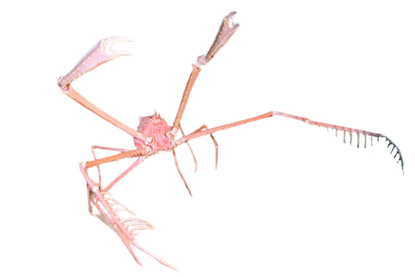
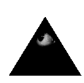
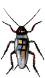
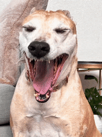
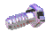
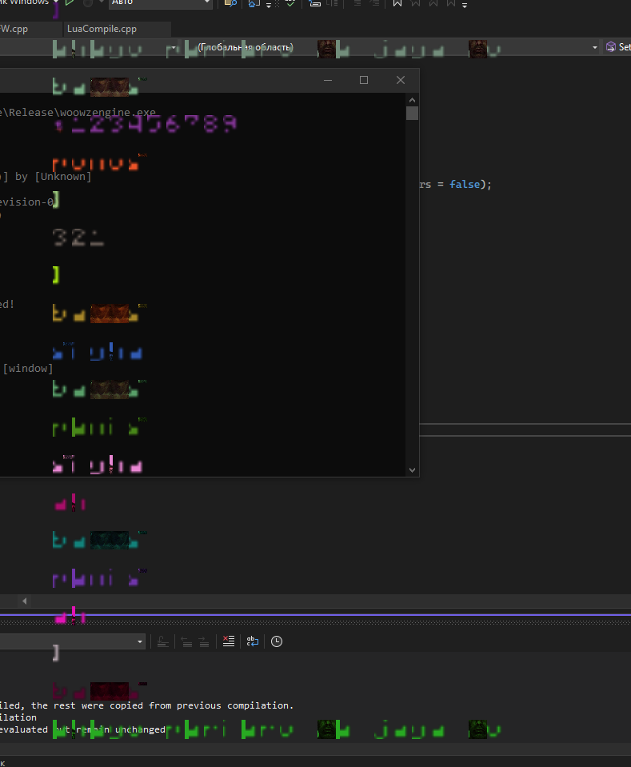
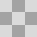

<!DOCTYPE HTML>
<meta charset="utf-8">
<link rel="icon" type="image/x-icon" href="source/woowzengine.ico">
<title>WoowzEngine - Wiki</title>

<meta property="og:type" content="website">
<meta property="og:url" content="https://woowz11.github.io/woowzsite/woowzengine.html">
<meta property="og:image" content="https://raw.githubusercontent.com/Woowz11/woowzsite/main/source/woowzengine/og.png">
<meta name="twitter:card" content="summary_large_image">

<meta property="og:site_name" content="WoowzEngine Official WIKI">
<meta property="og:title" content="Википедия по WoowzEngine">
<meta property="og:description" content="">

<style>

@font-face {
    font-family: "Concrete";
    src: url("source/concrete.otf") format('opentype');
}

  ::selection{
    color: rgb(255, 255, 255);
    text-shadow: 0px 0px 10px red;
  }
  
  html{
    margin: 0;
	overflow-x: hidden;
  }
  body{
    margin: 0;
    font-family: "Verdana", sans-serif;
    font-size: 22px;
    background-image: url("source/concrete2.png");
    background-blend-mode: multiply;
    background-color: rgb(255,255,255);
    text-shadow: 0px 2px 5px color-mix(in srgb, currentColor 70%, transparent);
	cursor: default;
  }

  img{
    border-radius: 8px;
    box-shadow: 0px 2px 5px black;
    user-select: none;
    -webkit-user-drag: none;
    -moz-user-select: none;
    -ms-user-select: none;
  }
  
  .canzoom{
	cursor: zoom-in;
	transition: transform 0.3s;
  }
  
  .canzoom.selected{
	cursor: zoom-out;
	position: relative;
	z-index: 100;
	transform: scale(1.3);
  }

  a{
    text-decoration: none;
    color: rgb(122,0,8);
    transition: 0.3s ease;
    cursor: pointer;
  }

  a:hover{
    color: red;
  }

  a::selection{
    color: yellow;
  }
  
  a.yellow{
    text-decoration: none;
    color: yellow;
    transition: 0.3s ease;
    cursor: pointer;
	text-shadow: 1px 1px 3px rgba(0, 0, 0, 0.5);
  }

  a.yellow:hover{
    color: white;
	text-shadow: 0px 2px 5px rgb(150,130,0);
  }

  a.yellow::selection{
    color: yellow;
  }

  button{
    all: unset;
    padding: 3px 3px;
    cursor: pointer;
    font-family: "Verdana", sans-serif;
    border-radius: 10px;
    box-shadow: 0px 3px 20px rgba(0, 0, 0, 0.2);
    background-color: rgb(255, 255, 255);
    color: rgb(0, 0, 0);
    border: 1px solid currentColor;
    z-index: 2;
  }

  button:hover{
    background-color: rgb(117, 117, 117);
    color: rgb(255, 255, 255);
    text-decoration: underline;
    text-shadow: 0px 0px 15px rgb(255,255,255);
  }
  
  button:not(:hover){
	transition: color 1s;
  }

  .whitetd:hover font {
	color: rgb(255,255,255);
  }
  .whitetd:hover{
	background-color: color-mix(in srgb, currentColor 40%, transparent);
  }
  .whitetd:not(:hover) font{
	transition: color 1s;
  }
  
  .yellowbutton{
    box-shadow: 0px 3px 20px rgba(0, 0, 0, 0.2);
    background-color: rgb(255, 255, 255);
    color: rgb(168,154,0);
  }

  .yellowbutton:hover{
    background-color: rgb(117, 117, 117);
    color: rgb(255, 233, 0);
    text-shadow: 0px 0px 15px rgb(255, 233, 0);
  }

  .greenbutton{
    box-shadow: 0px 3px 20px rgba(0, 0, 0, 0.2);
    background-color: rgb(255, 255, 255);
    color: rgb(22,122,0);
  }

  .greenbutton:hover{
    background-color: rgb(117, 117, 117);
    color: rgb(9, 255, 0);
    text-shadow: 0px 0px 15px rgb(9, 255, 0);
  }
  
  .greentd:hover font {
	color: rgb(9,255,0);
	text-decoration: underline;
  }
  .greentd:hover{
	background-color: color-mix(in srgb, currentColor 40%, transparent);
  }
  .greentd:not(:hover) font{
	transition: color 1s;
  }
  
  .blacktd:hover font {
	color: rgb(255,255,255);
	text-decoration: underline;
  }
  .blacktd:hover{
	background-color: color-mix(in srgb, currentColor 40%, transparent);
  }
  .blacktd:not(:hover) font{
	transition: color 1s;
  }

  .redbutton{
    box-shadow: 0px 3px 20px rgba(0, 0, 0, 0.2);
    background-color: rgb(255, 255, 255);
    color: rgb(122,0,8);
  }

  .redbutton:hover{
    background-color: rgb(117, 117, 117);
    color: rgb(255, 0, 0);
    text-shadow: 0px 0px 15px rgb(255, 0, 0);
  }
  
  .blackbutton{
    box-shadow: 0px 3px 20px rgba(0, 0, 0, 0.2);
    background-color: rgb(100,100,100);
    color: rgb(200,200,200);
  }

  .blackbutton:hover{
    background-color: rgb(50,50,50);
    color: rgb(255, 255, 255);
    text-shadow: 0px 0px 15px rgb(255, 255, 255);
  }

  .container {
    display: flex;
    flex-direction: column;
    align-items: center;
  }
  .header {
    background-image: url("source/concrete2.png");
    background-blend-mode: multiply;
    background-color: rgb(142,0,4);
    color: rgb(255,255,255);
  }
  .whitebox{
    background-image: url("source/concrete2.png");
    background-blend-mode: multiply;
    background-color: rgb(216, 216, 216);
    color: rgb(0,0,0);
  }
  .greenbox{
    background-image: url("source/concrete2.png");
    background-blend-mode: multiply;
    background-color: rgb(214,255,214);
    color: rgb(22,122,0);
  }
  .redbox{
    background-image: url("source/concrete2.png");
    background-blend-mode: multiply;
    background-color: rgb(255,214,214);
    color: rgb(122,0,8);
  }
  .redbox button{
	width: 25%;
  }
  
  .footer {
    display: flex;
    flex-direction: row;
    width: 100%;
  }
  
  table {
    width: 90%;
    border-collapse: collapse;
    text-align: center;
    margin: 20px;
  }

  td {
    text-align: left;
	padding: 10px;
	border: 2px solid currentColor;
  }
  
  table:not(.notitle) tr:first-child {
    background-color: color-mix(in srgb, currentColor 20%, transparent);
  }
</style>

<html>
  <script src="source/woowzengine/errors.js"></script>

  <link rel="stylesheet" href="source/luacode.css">
  <link rel="stylesheet" href="source/glslcode.css">
  <script src="https://cdnjs.cloudflare.com/ajax/libs/codemirror/5.62.3/codemirror.min.js"></script>
  <script src="https://cdnjs.cloudflare.com/ajax/libs/codemirror/5.62.3/mode/lua/lua.min.js"></script>
  <script src="https://cdnjs.cloudflare.com/ajax/libs/codemirror/5.62.0/mode/clike/clike.min.js"></script>
  <body id="body" onload="generate()">

  </body>
</html>

<script>

  function generate(){
    var href = window.location.href;
    
    var parts = href.split("#");
    var extrahref = "";
    if(parts.length>1){
      extrahref = parts[1].toLowerCase();
      if(!Pages[extrahref]){
        extrahref = parts[1].toUpperCase();
      }
    }

    if(extrahref==""){
      StartScreen();
	}else if(extrahref.toLowerCase()=="id"||extrahref.toLowerCase()=="ids"){
		OpenIDs();
	}else if(extrahref.toLowerCase()=="gallery"){
		OpenGalery();
	}else if(extrahref.toLowerCase()=="stats"){
		OpenStats();
    }else{
      ButtonPress(extrahref,"","o");
    }
	setTimeout(function () {
        window.scrollTo(0, 0);
    },1);
  }

  const body = document.getElementById('body');
  
  const engineversion = "0.0.3";
  var funnyimagesdescription = {
    0 :["2024-05-28","Сделал смешной шрифт когда добавлял функцию цвета для текста"],
    1 :["2024-05-28","Шейдер изгибающий таким образом текст"],
    2 :["2024-05-28",`Получился прикольный эффект изгибания текста с помощью шейдера<br></center><pre class="code-glsl">`+GenerateCode(`
#version 330 core
layout (location = 0) in vec3 aPos;
layout (location = 1) in vec2 aTexCoord;

uniform vec2 scale;
uniform float charpos;
uniform float stringlen;
uniform float time;

out vec2 TexCoord;

void main()
{
  float pos = charpos/stringlen;
  vec2 NewPosition = aPos.xy * scale * (pos*10);
  gl_Position = vec4(vec2(NewPosition.x, NewPosition.y), 0, 1);
  TexCoord = aTexCoord;
}
`,true)+`</pre>`],
    3 :["2024-05-28","Увеличил отображение текстуры в шейдере текста"],
    4 :["2024-05-28","Поломал отображение текстур с помощью шейдера"],
    5 :["2024-05-28","С помощью высоты получилось сделать забор из текста"],
    6 :["2024-05-28","Сломал отступы в тексте с помощью шейдера"],
    7 :["2024-05-27","Моя первая попытка сделать текст с помощью FreeType, но не сложилось по этому оставил эту затею"],
    8 :["2024-05-28","Первая попытка на новой системе шрифта написать слово \"Hello!\", но карта шрифта съехала"],
    9 :["2024-05-27","Сделал таблицу спрайтов с разными эффектами"],
    10:["2024-05-27","Сделал таблицу спрайтов с разными эффектами"],
    11:["2024-05-26","Пытался исправить ошибку с рендерингом прозрачных пикселей, и случайно сделал такой эффект"],
    12:["2024-05-27","Сделал таблицу спрайтов с разными эффектами"],
    13:["2024-05-28","Случайно загрузил текстуры шрифта не в RGB а в RGBA (или наоборот не помню чесн.)"],
    14:["2024-05-25","Сделал таблицу спрайтов с разными эффектами"],
    15:["2024-05-26","Шейдер который разбил плитки"],
    16:["2024-05-25","Сделал таблицу спрайтов с разными эффектами"],
    17:["2024-05-26","Луч из иконок Питера Гриффина"],
    18:["2024-05-26","Визуальный баг с прозрачностью, что видно что находится за окном (если приглядется на звёзды)"],
    19:["2024-05-26","Шейдер который растянул плитки"],
    20:["2024-05-21","Самая первая версия добавления текстур к спрайтам"],
    21:["2024-05-25","Сделал таблицу спрайтов с разными эффектами"],
    22:["2024-05-25","Рендер куча разной формы спрайтов"],
    23:["2024-05-25","Вот что случиться если не полностью загрузить цвета в текстуру (в данном случае на половину)"],
    24:["2024-05-20","Очень баганный старый рендер (честно не знаю будет ли сейчас так же)"],
    25:["2024-04-13","Самая первая версия этого сайта"],
    26:["2024-05-16","Эксперементы с консолью"],
    27:["2024-05-25","Рисунок глаза сделаный с помощью скриптов и добавление поворотов спрайта"],
    28:["2024-04-15","Вторая версия этого сайта"],
	29:["2024-06-09","Баг текстуры когда я забыл добавить glPixelStorei(GL_UNPACK_ALIGNMENT, 1);"],
    30:["2024-05-28",`Волнистый текст<br></center><pre class="code-glsl">`+GenerateCode(`
#version 330 core
layout (location = 0) in vec3 aPos;
layout (location = 1) in vec2 aTexCoord;

uniform vec2 scale;
uniform float charpos;
uniform float stringlen;
uniform float zoom;

out vec2 TexCoord;

void main()
{
    vec2 NewPosition = aPos.xy * scale;
    gl_Position = vec4(vec2(NewPosition.x,NewPosition.y + zoom*sin(charpos/stringlen*10)), 0, 1);
    TexCoord = aTexCoord;
}
`,true)+`</pre><center>Анимированный вариант<br></center><pre class="code-glsl">`+GenerateCode(`
#version 330 core
layout (location = 0) in vec3 aPos;
layout (location = 1) in vec2 aTexCoord;

uniform vec2 scale;
uniform float charpos;
uniform float stringlen;
uniform float zoom;
uniform float time;

out vec2 TexCoord;

void main()
{
    vec2 NewPosition = aPos.xy * scale;
    gl_Position = vec4(vec2(NewPosition.x,NewPosition.y + zoom*sin(charpos/stringlen*10+(time/30))*5), 0, 1);
    TexCoord = aTexCoord;
}
`,true)+`</pre>`],
	31:["2024-05-28","Первая версия добавление кастомного шрифта"],
	32:["2024-04-15",`Первый нормальный рендер окон GLFW<br></center><pre class="code">`+GenerateCode(`
CreateWindow("red","RED")
local scene_red = Scene.new("red")
scene_red:SetBackgroundColor(Color.new(255,0,0))
SetWindowScene("red",scene_red)

CreateWindow("green","GREEN")
local scene_green = Scene.new("green")
SetWindowScene("green",scene_green)

CreateWindow("blue","BLUE")
local scene_blue = Scene.new("blue")
SetWindowScene("blue",scene_blue)
scene_blue:SetBackgroundColor(Color.new(0,0,255))

scene_green:SetBackgroundColor(Color.new(0,255,0))
`)+`</pre>`],
	33:["2024-04-17","Самые первые попытки добавить рендер текстур"],
	34:["2024-05-15","Получившийся баг когда я делал сайт"],
	35:["2024-05-14","Нарисовал скелета с помощью спрайтов, из-за рендера этой сцены было 5 фпс примерно"],
	36:["2024-06-10","Случайно сломал сайт"],
	37:["2024-06-13","Случайно сломал сайт"],
	38:["2024-06-26","Вызвался синий экран смерти когда добавлял ImGui к своему движку"],
	39:["2024-06-25","Первые попытки добавить ImGui в свой движок"],
	40:["2024-07-01","Сгенерированный мой сайт во вкладке ID's"],
	41:["2024-07-02","Криво работающие input в ImGui"],
	42:["2024-07-03","Очередной баг на сайте получившийся случайно"],
  }
  
  var funnyimagesids = {};
  var funnyimagesrand = [];
  for (var i = 0; i <= (Object.keys(funnyimagesdescription).length-1); i++) {
	funnyimagesrand.push(i);
  }
  funnyimagesrand.sort(function(){ return 0.5 - Math.random(); });
  for (var i = 0; i <= (Object.keys(funnyimagesdescription).length-1); i++) {
	funnyimagesids[i] = funnyimagesrand[i];
  }

  async function CopyToClipboard(text) {
	console.log("Copy ["+text+"]");
    try {
		await navigator.clipboard.writeText(text.replace(/@/g,'"').replace(/&/g,'`'));
	} catch (error) {
		console.error(error.message);
    }
  }

  function UpdateCode(){
    document.querySelectorAll(".lua").forEach(function(lua){
      var editor = CodeMirror.fromTextArea(lua, {
        mode: "lua",
        theme: "luacode",
        readOnly: true
      });
    });

    document.querySelectorAll(".glsl").forEach(function(glsl){
      var editor = CodeMirror.fromTextArea(glsl, {
        mode: "text/x-c",
        theme: "glslcode",
        readOnly: true
      });
    });
  }

  var oldscrolly = 0;
  function ButtonPress(id,lastopen,type,event){
	setTimeout(function () {
		oldscrolly = window.scrollY;
        window.scrollTo(0, 0);
    },1);
	var middlemouse = event!=null;
	if(middlemouse){
		middlemouse = event.which == 2;
		if(event.which == 3){
			return
		}
	}
    if (middlemouse) {
        window.open("https://woowz11.github.io/woowzsite/woowzengine.html#"+id,"_blank");
    }else{
		document.title = "WoowzEngine - #"+id;
		if(lastopen==""){lastopen=null}
		if(type==null){type="";}
		var ids = Object.keys(Pages);
		var index = ids.indexOf(id);
    
		var id_next = "";
		var id_prev = "";

		if(index < ids.length - 1){
			id_next = ids[index+1];
		}
    
		if(index > 0){
			id_prev = ids[index-1];
		}

		var htmlstart = `
		<div class="header" style="height: 15vh; width: 100%; background-color: rgb(`+(type=="f"?"45,142,0":(type=="e"?"40,40,40":"142,0,4"))+`);">
		<br><br>
		<div style="margin-left: 50px;"><button `+(lastopen?(lastopen=="#IDS#"?`title="Вернуться на ID's"`:"title='Вернуться на #"+lastopen+"'"):"")+` onmousedown="`+(lastopen?(lastopen == "#IDS#"?"OpenIDs()":"ButtonPress('"+lastopen+"','','"+(lastopen?type:"")+"')"):"StartScreen(event)")+`">`+(lastopen?"Обратно":"На главную")+`</button>
			`+(id_prev==""?"":"<button title='Открыть #"+id_prev+"' onmousedown='ButtonPress(\""+id_prev+"\",\"\",\""+type+"\",event)'>Прошлое</button>")+` `+
			(id_next==""?"":"<button title='Открыть #"+id_next+"' onmousedown='ButtonPress(\""+id_next+"\",\"\",\""+type+"\",event)'>Следующее</button>")+`
			<button title='Скопировать #`+id+`!' onclick="CopyToClipboard('https://woowz11.github.io/woowzsite/woowzengine.html#`+id+`')">Скопировать ссылку</button>
		</div>
		</div><br>
		`;
		var html = "<center>Не найдено [<font style='font-style: italic;'>"+id+"</font>]! Может быть ещё не создано!<br><br>Not found [<font style='font-style: italic;'>"+id+"</font>]! Maybe it hasn't been created!</center>";
		if(id in Pages){
			html = Pages[id][0];
		}
		body.innerHTML = htmlstart+html+"<br>";

		UpdateCode();
	}
  }

  function FunctionInfo(name,hasreturn,dangerous){
	var thatgetset = false;
	var name_ = name;
	if(name.charAt(0)=='@'){
		thatgetset = true;
		name = name.slice(1);
	}
    var category = "Не найдено ['"+name.toLowerCase()+"']! Сообщите автору";
    var keys = Object.keys(FunctionsTypes);
    for(const key__ in keys){
      var key_ = keys[key__];
      var id = name_.toLowerCase();
      if(FunctionsTypes[key_].includes(id)){
        category = key_;
      }
    }
    var info = `
    <center><br>
      <font style="font-size: 40px;">`+(thatgetset?"Set"+name+"(), Get"+name:name)+`()</font><br>
      <br>
      <font>•`+category+`•</font><br>
      `+(thatgetset?"Get: <font style='font-size: 15px;'>RETURNABLE</font>":(hasreturn?"<font style='font-size: 15px;'>RETURNABLE</font>":""))+`<br>
      `+(dangerous?"Эта функция не будет работать в <button onclick=\"ButtonPress('savemode','"+name.toLowerCase()+"()','o',event)\">безопасном режиме</button>!":"")+`
      <br><br><hr><br>
    </center><br>
    <div style="margin-left: 20vw; width: 60vw; font-family: monospace;">
    `;

    return info;
  }
  
  	function GetFuncTitle(key){
		var notfound = false;
		var title = "";
		if(!Pages[key.toLowerCase()]){
			notfound = true;
			title = "Функция ещё не документирована!";
		}else{
			if(Pages[key.toLowerCase()][1]){
				title = Pages[key.toLowerCase()][1];
			}else{
				title = "Информация о функции ещё не записана!";
			}
		}
		return [title,notfound];
	}
	
	function GetErrorTitle(key){
		var emptyerror = false;
		var content_ = Pages[key.toUpperCase()][2];
		if(content_==""){content_ = "Пустая ошибка! Предупредите автора"; emptyerror = true;}
		if(content_.includes("savemode")){content_ = "Функция не может быть запущена в безопасном режиме";}
		var func = "";
		if(Pages[key.toUpperCase()][3]!=""){
			func = Pages[key.toUpperCase()][3].replace(/!/g, '');
		}
		return [(func==""?"":func+" : ")+content_,emptyerror,func];
	}
  
  var codecount = 0;
  function GenerateCode(code, thatglsl){
    if(thatglsl==null){thatglsl = false;}
	var text = code.slice(1).slice(0,-1).replace(/"/g,'@');
    return `<div style="position: relative;"><textarea class='`+(thatglsl?"glsl":"lua")+`' readonly>`+code.slice(1).slice(0,-1)+`</textarea><button style='position: absolute; top: 0; right: 32px;' title='Скопировать!' onclick="CopyToClipboard(\``+text+`\`)">C</button><button style='position: absolute; top: 0; right: 0;' title='Скопировать для Discord!' onclick="CopyToClipboard(\``+"&&&"+(thatglsl?"glsl":"lua")+"\n"+text+"\n&&&"+`\`)">CD</button></div>`;
  }

	function OpenIDs(){
	document.title = "WoowzEngine - ID's";
	
	list = {};
	
	for (let key in Pages){
		var type = "o";
		if(key.includes("()")){
			type = "f";
		}
		if(/[A-Z]/.test(key)){
			type = "e";
		}
		if(key == "0000"){
			type = "e";
		}
		
		var content = Pages[key][0];
		var lowcontent = content.toLowerCase();
		var extra = "";
		var extra2 = "";
		if(type=="e"){
			if(content.includes("savemode")){
				extra = extra + ",safemode";
			}
			if(content.includes("Является устаревшим")){
				extra = extra + ",old";
			}
			if(lowcontent.includes("с таким айди уже существует")||lowcontent.includes("уже есть на сцене")){
				extra = extra + ",alrex";
			}
			if(lowcontent.includes("не может быть пустой")){
				extra = extra + ",emptstr";
			}
			if(lowcontent.includes("входные данные одинаковые")){
				extra = extra + ",indical";
			}
			if(lowcontent.includes("не найден") || lowcontent.includes("не была найден") || lowcontent.includes("не было найден") || lowcontent.includes("не был найден")){
				if(lowcontent.includes("не найдена функция")){
					extra = extra + ",nofunc";
				}else{
					extra = extra + ",notfound";
				}
			}
			if(lowcontent.includes("сломан")){
				extra = extra + ",broken";
			}
			if(lowcontent.includes("интернет")){
				extra = extra + ",nointernet";
			}
			if(lowcontent.includes("за рамки")||lowcontent.includes("быть >")||lowcontent.includes("быть <")||lowcontent.includes("быть =")||lowcontent.includes("больше")||lowcontent.includes("меньше")){
				extra = extra + ",math";
			}
			if((lowcontent.includes("не получилось") || lowcontent.includes("нельзя") || lowcontent.includes("ошибка при") || lowcontent.includes("не возможно")) && !extra.includes("alrex")){
				extra = extra + ",operationbroke";
			}
			if(lowcontent.includes("с windows")){
				extra = extra + ",nobywin";
			}
		}
		
		var func = "";
		if(type=="f"){
			var startIndex = content.indexOf('•') + 1;
			var endIndex = content.indexOf('•', startIndex);
			extra = content.substring(startIndex, endIndex);
			
			if(lowcontent.includes("<pre ")){
				extra2 = extra2 + ",hascode";
			}
			if(lowcontent.includes("www.desmos.com")){
				extra2 = extra2 + ",graf";
			}

			func = [];
			var startIndex = content.indexOf("???");
			while (startIndex !== -1) {
				var endIndex = content.indexOf("???", startIndex + "???".length);
				if (endIndex !== -1) {
					var word = content.substring(startIndex + "???".length, endIndex);
					func.push([word.trim(),GetErrorTitle(word.trim())[0]]);
				}
				startIndex = content.indexOf("???", endIndex + "???".length);
			}

		}
		
		if(type=="o"){
			if(lowcontent.includes("<pre ")){
				extra = "hascode";
			}
		}
		
		var notfound = false;
		var title = "";
		if(type=="f"){
			var r = GetFuncTitle(key);
			title = r[0];
			notfound = r[1];
		}
		var emptyerror = false;
		if(type=="e"){
			var r = GetErrorTitle(key);
			title = r[0];
			func = r[2];
			emptyerror = r[1];
			if(emptyerror){
				extra = extra + ",empty";
			}
		}
		
		list[key] = [type,extra,title,func,extra2];
	}
	
	var num = 1;
	var numo = 1;
	var numf = 1;
	var nume = 1;
	function g0(){
		var result = "";
		
		var notfirst = false;
		for (let key in list) {
			var altnum = num;
			var alr = false;
			if(num <= 9){
				altnum = altnum+"<font style='color:transparent; text-shadow: 0px 0px 0px transparent; user-select: none;'>00</font>";
				alr = true;
			}
			if(num <= 99 && !alr){
				altnum = altnum+"<font style='color:transparent; text-shadow: 0px 0px 0px transparent; user-select: none;'>0</font>";
			}
			result = result + (notfirst?"<br>":"") + altnum + " <font style='color:rgba("+(list[key][0]=="o"?"128,0,0":(list[key][0]=="f"?"0,128,0":"80,80,80"))+",0.5);'>(" + (list[key][0]=="o"?numo:(list[key][0]=="f"?numf:nume)) + ")</font>";
			notfirst = true;
			num++;
			(list[key][0]=="o"?numo++:(list[key][0]=="f"?numf++:nume++));
		}
		
		return result;
	}
	
	function g(){
		var result = "";
		
		var notfirst = false;
		for (let key in list) {
			result = result + (notfirst?"<br>":"") + `<button title="Скопировать #`+key+`!" onclick="CopyToClipboard('https://woowz11.github.io/woowzsite/woowzengine.html#`+key+`')" style="margin-left:-25px; margin-top:2px; position:absolute; width: 10px; height: 10px;"><div style="font-size: 14px; position:absolute; margin-top:-12px; margin-left:-1px;">C</div></button>` + `<a `+(list[key][2]==""?"":`title="`+list[key][2]+`"`)+` onmousedown="ButtonPress('`+key+`','#IDS#','`+list[key][0]+`',event)">` + key + "</a>";
			notfirst = true;
		}
		
		return result;
	}
	
	function g2(){
		var result = "";
		
		var notfirst = false;
		for (let key in Pages) {
			result = result + (notfirst?"<br>":"") + (list[key][0]=="o"?"Остальное":(list[key][0]=="f"?"Функция":"Ошибка")) + "<font style='opacity:0.5;'>";
			
			if(list[key][0] == "e"){
				if(list[key][1].includes("safemode")){
					result = result + ` <a class="yellow" onmousedown="ButtonPress('savemode','#IDS#','o',event)">(SafeMode)</a>`;
				}
				if(list[key][1].includes("empty")){
					result = result + " <font style='color:rgb(122,0,8);'>(Пустая)</font>";
				}
				if(list[key][1].includes("old")){
					result = result + " <font style='color:rgb(122,0,8);'>(Устаревшая)</font>";
				}
				if(list[key][1].includes("nofunc")){
					result = result + " (Не найдена функция)";
				}
				if(list[key][1].includes("alrex")){
					result = result + " (Уже существует такой ID)";
				}
				if(list[key][1].includes("emptstr")){
					result = result + " (Пустая строка)";
				}
				if(list[key][1].includes("indical")){
					result = result + " (Одинаковые переменные)";
				}
				if(list[key][1].includes("notfound")){
					result = result + " (Не найдено)";
				}
				if(list[key][1].includes("broken")){
					result = result + " (Сломано)";
				}
				if(list[key][1].includes("nointernet")){
					result = result + " (Отсутсвует интернет)";
				}
				if(list[key][1].includes("math")){
					result = result + " (Неверная величина)";
				}
				if(list[key][1].includes("operationbroke")){
					result = result + " (Не получилось)";
				}
				if(list[key][1].includes("nobywin")){
					result = result + " (Не прошёл совместимость)";
				}
			}
			
			if(list[key][0] == "f"){
				result = result + " ("+list[key][1]+")";
				if(!list[key][4].includes("hascode")){
					result = result + " (Без примера)";
				}
				if(list[key][4].includes("graf")){
					result = result + " (Г)";
				}
			}
			
			if(list[key][0] == "o"){
				if(list[key][1].includes("hascode")){
					result = result + " (Есть код)";
				}
			}
			
			notfirst = true;
			
			result = result + "</font>";
		}
		
		return result;
	}
	
	function g3(){
		var result = "";
		
		var notfirst = false;
		for (let key in Pages) {
			result = result + (notfirst?"<br>":"") + "";
			
			if (list[key][0]=="e"){
				var func = list[key][3];
				var id = func.toLowerCase();
				
				var found = false;
				if(id in Pages){
					found = true;
				}else{
					var testid = id.replace(/set|get/g, '@');
					if(testid in functionstable){
						id = testid;
					}
				}
				
				if(found){
					func = `<a title="`+GetFuncTitle(id)[0]+`" onmousedown="ButtonPress('`+id+`','#IDS#','f',event)">`+func+"</a>";
				}
				else{
					if(id in functionstable && id.includes("()")){
						func = `<a class="yellow" title="`+GetFuncTitle(id)[0]+`" onmousedown="ButtonPress('`+id+`','#IDS#','f',event)">`+func+"</a>";
					}
				}
				
				if(id == "jsongame"){
					func = `<a onmousedown="ButtonPress('`+id+`','#IDS#','o',event)">JSON Game File</a>`;
				}
				if(id == "jsonengine"){
					func = `<a onmousedown="ButtonPress('`+id+`','#IDS#','o',event)">JSON Engine File</a>`;
				}
				if(id == "jsonsettings"){
					func = `<a onmousedown="ButtonPress('`+id+`','#IDS#','o',event)">JSON Settings File</a>`;
				}
				
				result = result + func;
			}
			
			if (list[key][0]=="f"){
				for(var i = 0; i < list[key][3].length; i++){
					var func = list[key][3][i];
					result = result + `<a title="`+func[1]+`" onmousedown="ButtonPress('`+func[0]+`','#IDS#','e',event)">` + func[0] + `</a> `;
				}
			}
			
			
			notfirst = true;
		}
		
		return result;
	}
	
	function g4(){
		var result = "";
		
		var IidkWhatAddSoooo = ["omagad","ок","сколько тут слов?","а вы ждёте блуд рав?","это что ещё такое?!","<- это говно не рекомендую","🚽","чё за секретки","это полный пиздец","вувз энджин никогда не выйдет!",`<audio style="margin-top:0px; position: absolute; height: 23px; width: 300px;" controls><source src="source/doom.mp3" type="audio/mpeg"></audio>`,"🐓","а вы видели woowzwiki?","копро",``,``,``,``,``,``,];
		var notfirst = false;
		for (let key in Pages) {
			result = result + (notfirst?"<br>":"");
			notfirst = true;
			
			if(Math.random()*1000>999){
				result = result + IidkWhatAddSoooo[Math.floor(Math.random()*IidkWhatAddSoooo.length)];
			}
		}
		
		return result;
	}
	
	var lineheight = 1.75;
	var blackprocent = 10;
    body.innerHTML = `
		<div class="header" style="height: 15vh; width: 100%;">
			<br><br>
			<div style="margin-left: 50px;"><button onmousedown="StartScreen(event)">На главную</button>
			</div>
		</div><br>
		<div style="display: flex; background: repeating-linear-gradient(0deg, color-mix(in srgb, black `+blackprocent+`%, transparent) 0, color-mix(in srgb, black `+blackprocent+`%, transparent) `+lineheight+`ch, transparent `+lineheight+`ch, transparent `+(lineheight*2)+`ch);">
			<div style="margin-left: 1vw; width: 10vw; white-space: nowrap; line-height: `+lineheight+`ch;">`+g0()+`</div>
			<div style="margin-left: 3vw; width: 20vw; white-space: nowrap; line-height: `+lineheight+`ch;">`+g()+`</div>
			<div style="margin-left: 4vw; width: 20vw; white-space: nowrap; line-height: `+lineheight+`ch;">`+g2()+`</div>
			<div style="margin-left: 4vw; width: 20vw; white-space: nowrap; line-height: `+lineheight+`ch;">`+g3()+`</div>
			<div style="margin-left: 4vw; width: 20vw; white-space: nowrap; line-height: `+lineheight+`ch;">`+g4()+`</div>
		</div>
		<br>
		`;
  }

  var funnyimages = Object.keys(funnyimagesdescription).length-1;
  var selectedimage = Math.round(Math.random()*funnyimages);
  function NextImage(next){
    var funnyimage = document.getElementById("funnyimage");
	funnyimage.classList.remove("selected");
    if(next){
      selectedimage++;
    }else{
      selectedimage--;
    }
    if(selectedimage>funnyimages){
      selectedimage=0;
    }
    if(selectedimage<0){
      selectedimage=funnyimages;
    }

	document.title = "WoowzEngine - Gallery ("+selectedimage+"/"+funnyimages+")";
	
    const now = new Date();
	const startenginedate = new Date(funnyimagesdescription[funnyimagesids[selectedimage]][0]);
	const startenginetime = now.getTime() - startenginedate.getTime();
	const days = Math.floor(startenginetime/(1000 * 60 * 60 * 24));

    funnyimage.src = "source/woowzengine/funny/"+funnyimagesids[selectedimage]+".png";
	funnyimage.onclick = function() {
		window.open(funnyimage.src);
	};
    const dateParts = funnyimagesdescription[funnyimagesids[selectedimage]][0].split("-").reverse();
    const formattedDate = dateParts.join("-");
    document.getElementById("funnyimagedesc_days").innerHTML = formattedDate+" ("+days+" дней назад)";
    document.getElementById("funnyimagedesc").innerHTML = "<center>"+funnyimagesdescription[funnyimagesids[selectedimage]][1];

    UpdateCode();
  }

  function OpenGalery(){
    body.innerHTML = `
		<div class="header" style="height: 15vh; width: 100%;">
			<br><br>
				<div style="margin-left: 50px;"><button onmousedown="StartScreen(event)">На главную</button>
			</div>
			</div><br>
			<br>
			<center><font style='font-size: 40px; font-family: monospace;'>Галерея</font></center><br>
      <center><font style='font-family: monospace;'>Тут собраны различные смешные и странные фотографии во время разработки движка</font></center><br>
      <center><font style='font-family: monospace;'>Методы представленые здесь уже могут быть не актуальны!</font></center>
			<br>
			<hr>
			<br>

      <center>
        <div style="display: flex; justify-content: center;">
          <a style="position: relative; font-size: 50px; width:100%;" title="Прошлая картинка" onclick="NextImage(false)"><font style="position: absolute; top:50%; left:50%; transform: translate(-50%, -50%);">&#8592;</font></a>
          <div>
            
          </div>
          <a style="position: relative; font-size: 50px; width:100%;" title="Следущая картинка" onclick="NextImage(true)"><font style="position: absolute; top:50%; left:50%; transform: translate(-50%, -50%);">&#8594;</font></a>
        </div>
      </center>
      <br>
      <center><font style="font-size: 15px;" id="funnyimagedesc_days"></font></center><br>
      <div style="margin-left: 20vw; width: 60vw;"><font id="funnyimagedesc"></font></div>
      <br>
      <hr>
		`;

    NextImage(true);
  }

  function OpenStats(){
		document.title = "WoowzEngine - Stats";
		const now = new Date();
		const startenginedate = new Date("2024-04-7");
		const startenginetime = now.getTime() - startenginedate.getTime();
		const days = Math.floor(startenginetime/(1000 * 60 * 60 * 24));
  
		var kolvofunc = 0;
		for(let i = 0; i < Object.keys(ColumnFunctionsFUNC).length; i++){
			var func = ColumnFunctionsFUNC[Object.keys(ColumnFunctionsFUNC)[i]][0];
			kolvofunc++;
			if(func[0]=='@'){
				kolvofunc++;
			}
		}
  
		body.innerHTML = `
		<div class="header" style="height: 15vh; width: 100%;">
			<br><br>
				<div style="margin-left: 50px;"><button onmousedown="StartScreen(event)">На главную</button>
			</div>
			</div><br>
			<br>
			<center><font style='font-size: 40px; font-family: monospace;'>Статистика</font></center>
			<br>
			<hr>
			<br>
			<div style="margin-left: 42.75vw; width: 40vw; font-family: monospace;">
			
			Версия движка&nbsp;&nbsp;&nbsp;: `+engineversion+`<br>
			Возраст движка&nbsp;&nbsp;: `+days+` дней (≈`+(Math.floor((days/30)*10)/10)+` месяца)<br>
			Кол-во функций&nbsp;&nbsp;: `+kolvofunc+`<br>
			Кол-во категорий: `+Object.keys(FunctionsTypes).length+`<br>
			Кол-во ошибок&nbsp;&nbsp;&nbsp;: `+Object.keys(ColumnErrors).length+`<br>
			Кол-во страниц&nbsp;&nbsp;: `+Object.keys(Pages).length+" ("+((Math.floor((Object.keys(Pages).length/(Object.keys(ColumnOther).length+Object.keys(kolvofunc+ColumnErrors).length))*10000))/100)+"%)"+`<br>
			Кол-во всег.стр.: `+Object.keys(ColumnOther).length+" + "+kolvofunc+" + "+Object.keys(ColumnErrors).length+" = "+(Object.keys(ColumnOther).length+Object.keys(kolvofunc+ColumnErrors).length)+`<br>
			Кол-во смеш.карт: `+funnyimages+`<br>
			
			</div>

      <br>
      <hr>
		`;
  }
  
  function CreateDesmos(code){
	return `<center><iframe src="https://www.desmos.com/calculator/`+code+`?embed" width="800px" height="800px" style="border: 1px solid #ccc" frameborder=0></iframe></center>`;
  }
  
  function ColorBox(filter,a){
	a = a/255;
	return `<div style="position: relative; display: inline-block; margin-right: 30px;">
		
		
	</div>`;
  }
  
  function GenerateSymbolsTable(){
	const empty = ["пусто","Это пустая ячейка, она не имеет смысла"]
	var symbols = [
	["не сущ. символ","Этот символ не существует в этой таблице"],["не найд. символ","Этот символ не найден в текстуре шрифта"],["пробел","Пробел"],["спец. символ","Пока-что ничего не обозначает, возможно в будущем"],empty,empty,empty,empty,empty,empty,empty,empty,empty,empty,empty,empty,
	["0","Ноль"],["1","Один"],["2","Два"],["3","Три"],["4","Четыре"],["5","Пять"],["6","Шесть"],["7","Семь"],["8","Восемь"],["9","Девять"],["+","Плюс"],["-","Минус"],["=","Равно"],["(","Открывающаяся скобка"],[")","Закрывающаяся скобка"],["_","Нижнее подчёркивание"],
	["*","Звёздочка"],["/","Косая черта"],["|","Вертикальная черта"],["\\","Обратная косая черта"],["\"","Кавычки"],["#","Решётка"],["%","Процент"],["&","Амперсанд (And)"],["<","Меньше"],[">","Больше"],["^","Циркумфлекс"],["[","Открывающаяся квадратная скобка"],["]","Закрывающаяся квадратная скобка"],["{","Открывающаяся фигурная скобка"],["}","Закрывающаяся фигурная скобка"],["~","Тильда"],
	[".","Точка"],[",","Запятая"],[":","Двоедочие"],[";","Точка с запятой"],["'","Одиночная кавычка"],["`","Апостроф"],["№","Номер"],["!","Восклицательный знак"],["?","Вопросительный знак"],["@","Знак \"Собака\""],["±","Плюс-Минус"],["≤","Меньше или равно"],["≥","Больше или равно"],["≈","Примерно"],["∞","Бесконечность"],["$","Доллар"],
	["A","A"],["a","a"],["B","B"],["b","b"],["C","C"],["c","c"],["D","D"],["d","d"],["E","E"],["e","e"],["F","F"],["f","f"],["G","G"],["g","g"],["H","H"],["h","h"],
	["I","I"],["i","i"],["J","J"],["j","j"],["K","K"],["k","k"],["L","L"],["l","l"],["M","M"],["m","m"],["N","N"],["n","n"],["O","O"],["o","o"],["P","P"],["p","p"],
	["Q","Q"],["q","q"],["R","R"],["r","r"],["S","S"],["s","s"],["T","T"],["t","t"],["U","U"],["u","u"],["V","V"],["v","v"],["W","W"],["w","w"],["X","X"],["x","x"],
	["Y","Y"],["y","y"],["Z","Z"],["z","z"],["©","Знак авторского права"],["®","Зарегистрированный товарный знак"],["™","Торговая марка"],["√","Корень"],["≠","Не равно"],["§","Параграф"],["█","Полный блок (Блок 100%)"],["▓","Блок 75%"],["▒","Блок 50%"],["░","Блок 25%"],["÷","Делить"],["¬","Знак не"],
	["А","А"],["а","а"],["Б","Б"],["б","б"],["В","В"],["в","в"],["Г","Г"],["г","г"],["Д","Д"],["д","д"],["Е","Е"],["е","е"],["Ж","Ж"],["ж","ж"],["З","З"],["з","з"],
	["И","И"],["и","и"],["Й","Й"],["й","й"],["К","К"],["к","к"],["Л","Л"],["л","л"],["М","М"],["м","м"],["Н","Н"],["н","н"],["О","О"],["о","о"],["П","П"],["п","п"],
	["Р","Р"],["р","р"],["С","С"],["с","с"],["Т","Т"],["т","т"],["У","У"],["у","у"],["Ф","Ф"],["ф","ф"],["Х","Х"],["х","х"],["Ц","Ц"],["ц","ц"],["Ч","Ч"],["ч","ч"],
	["Ш","Ш"],["ш","ш"],["Щ","Щ"],["щ","щ"],["Ъ","Ъ"],["ъ","ъ"],["Ы","Ы"],["ы","ы"],["Ь","Ь"],["ь","ь"],["Э","Э"],["э","э"],["Ю","Ю"],["ю","ю"],["Я","Я"],["я","я"],
	["Ё","Ё"],["ё","ё"],["€","Евро"],["₽","Рубль"],["£","Фунт"],["¥","Иен"],["←","Стрелочка ввлево"],["→","Стрелочка вправо"],["↑","Стрелочка вверх"],["↓","Стрелочка ввниз"],["∫","Интеграл"],["·","Интерпункт"],["°","Градус"],["∾","Повёрнутая буква s"],["∝","Пропорционально"],["∅","Пустое множество"],
	["⁰","Ноль в степени"],["¹","Один в степени"],["²","Два в степени"],["³","Три в степени"],["⁴","Четыре в степени"],["⁵","Пять в степени"],["⁶","Шесть в степени"],["⁷","Семь в степени"],["⁸","Восемь в степени"],["⁹","Девять в степени"],["⁺","Плюс в степени"],["⁻","Минус в степени"],["⁼","Равно в степени"],["⁽","Открывающаяся скобка в степени"],["⁾","Закрывающаяся скобка в степени"],["∑","Сумма"],
	["☺","Улыбающееся лицо"],["☹","Грусное лицо"],["Æ","Æ"],["æ","æ"],["¢","Цент"],["¯","Верхнее подчёркивание"],["¤","Знак валюты"],["¦","Изломанная вертикальная черта"],["¡","Перевёрнутый восклицательный знак"],["¿","Перевёрнутый вопросительный знак"],["«","Открывающаяся ёлочка"],["»","Закрывающаяся ёлочка"],["ƒ","Функция"],["≡","Тождественно равно"],["✔","Галочка"],["❌","Крестик"],
	["☥","Анх"],["✝","Христьянский крест"],["卍","Отзеркаленная свастика"],["卐","Свастика"],["◀","Треугольник ввлево"],["▶","Треугольник вправо"],["▲","Треугольник"],["▼","Треугольник ввниз"],["⚠","Предупреждение"],["☢","Радиация"],["⚡","Молния"],["⚐","Белый флаг"],["☮","Символ мира"],["☯","Инь-Янь"],["☭","Серб и молот"],["○","Полый круг"],
	["∓","Минус-Плюс"],["Δ","Дельта"],["∀","Знак для всех"],["〈","Открывающаяся угольная скобка"],["〉","Закрывающаяся угольная скобка"],["⋮","Вертикальное многоточие"],["⋯","Многоточие"],["∬","Двойной интеграл"],["∥","Параллельно"],["∦","Не параллельно"],["□","Полый квадрат"],["⊂","Подмножество"],["⊃","Надмножество"],["∩","Пересечение"],["∪","Объединение"],["◦","Полый интерпункт"],
	["‣","Треугольний маркер списка"],["◼","Квадрат"],["◾","Маленький квадрат"],["●","Круг"],["▞","Шахматная доска"],["Ω","Омега"],["α","Альфа"],["β","Бета"],["γ","Гамма"],["δ","Дельта"],["θ","Тета"],["♥","Сердце"],["★","Звезда"],["♀","Знак венеры"],["♂","Знак марса"],["♫","Нота"],
	["₣","Франк"],["ε","Епсилон"],["π","Пи"],["▌","Прямоугольник слева"],["▐","Прямоугольник справа"],["▀","Прямоугольник сверху"],["▄","Прямоугольник снизу"],["▖","Квадрат снизу слева"],["▗","Квадрат снизу справа"],["▘","Квадрат сверху слева"],["▝","Квадрат сверху справа"],["▙","Пустой квадрат сверху справа"],["▟","Пустой квадрат сверху слева"],["▛","Пустой квадрат снизу справа"],["▜","Пустой квадрат снизу слева"],["✉","Письмо"],
	["×","Умножение"],["",""],["",""],["",""],["",""],["",""],["",""],["",""],["",""],["",""],["",""],["",""],["",""],["",""],["",""],["",""],
	];
	var result = "<table class='notitle'><tr>";
	var allsymbols = "";
	var x = 0;
	var y = 0;
	var count = 0;
	for(let i = 0; i < symbols.length; i++){
		result = result + `<td style='cursor: pointer; width:6.25%; text-shadow:none;' class='whitetd' title='`+(symbols[i][0]=="" || symbols[i][1]==""?"":"Скопировать [ "+symbols[i][1]+" ]")+`' onclick='CopyToClipboard("`+symbols[i][0]+`")'><font style='`+(symbols[i][1]==""?"color:RGB(255,0,0);":"")+`'><center>`+symbols[i][0]+`</center></font></td>`;
		x++;
		if(x>=16){
			x = 0;
			y++;
			result = result + "</tr><tr>";
		}
		if(y!=0){
			var symbol = symbols[i][0];
			if(symbol!=empty[0] && symbol!='"' && symbol!="'" && symbol!=""){
				allsymbols = allsymbols + symbol;
				count++;
			}
		}
	}
	return result+`</tr></table><br><button title="Скопировать!" onclick="CopyToClipboard('`+allsymbols+`')">Скопировать все символы в линию</button><br><br>Всего символов: `+count+`/`+(y*16)+`<br><br>Идеи для остальных символов можете предлагать`;
  }
  
function StartScreen(event){
	var middlemouse = event!=null;
	if(middlemouse){
		middlemouse = event.which == 2 || event.button == 1;
	}
    if (middlemouse) {
        window.open("https://woowz11.github.io/woowzsite/woowzengine.html","_blank");
    }else{
		document.title = "WoowzEngine - Wiki";
		body.innerHTML = `

		<div style="height: 22vh; width: 100%; cursor: default; padding-top: 3vh;" class="header">
			<center><font style="font-family: 'Concrete', sans-serif; font-size: 5vh;">WoowzEngine Wiki</font><font style="font-size: 2.5vh;"><br>`+engineversion+`</font><div style="margin-top:0;" /><font style="font-size: 1.5vh;">Официальный сайт</font><div style="margin-top:2vh;" /><font style="font-size: 2.5vh;">English version of wiki will be added soon! </font></center>
			<button style="margin-left: calc( 100vw - 200px ); position: absolute; top: 20px;" onclick="OpenStats()">Статистика</button>
			<button style="margin-left: calc( 100vw - 325px ); position: absolute; top: 20px;" onclick="OpenGalery()">Галерея</button>
			<button style="margin-left: calc( 100vw - 400px ); position: absolute; top: 20px;" onclick="OpenIDs()">ID's</button>
		</div>
		<div class="footer" style="height: auto;">
			<div class="whitebox" style="flex:30;"><div style="padding: 10px;" id="c_other"></div></div>
			<div class="greenbox" style="flex:100;"><div style="padding: 10px;" id="c_func"></div></div>
			<div class="redbox" style="flex:40;"><center><div style="padding: 10px;" id="c_errors"></div></center></div>
		</div>
		<br>
		&nbsp;&nbsp;&nbsp;&nbsp;Возможно в будущем тут будут новости обновлений...<br>&nbsp;
		`;

		const c_o = document.getElementById('c_other');
		const c_f = document.getElementById('c_func');
		const c_e = document.getElementById('c_errors');

		var divstart = "<div><center>";
		var divend = "</center></div>";

		function TextToButton(text,id,info,type){
			var char = info[0].charAt(0);
			if(char=="%"){
				return divend+"<br><center><font style='font-size: 125%;'>"+info[0].substring(1)+"</font></center><br>"+divstart;
			}
			if(char=="!"){
				return divend+info[0].substring(1)+divstart;
			}
			var getset = false;
			if(text.charAt(0)=="@"){
				getset = true;
			}
			var notfound = false;
			var title = "";
			if(type=="f"){
				if(!Pages[text.toLowerCase()]){
					notfound = true;
					title = "Функция ещё не документирована!";
				}else{
					if(Pages[text.toLowerCase()][1]){
						title = Pages[text.toLowerCase()][1];
					}else{
						title = "Информация о функции ещё не записана!";
					}
				}
			}
			var emptyerror = false;
			if(type=="e"){
				var content = Pages[text.toUpperCase()][2];
				if(content==""){content = "Пустая ошибка! Предупредите автора"; emptyerror = true;}
				if(content.includes("savemode")){content = "Функция не может быть запущена в безопасном режиме";}
				title = (Pages[text.toUpperCase()][3]==""?"":Pages[text.toUpperCase()][3].replace(/!/g, '')+" : ")+content;
			}
			
			if(getset){
				return "<button "+(title!=""?"title='"+title+"'":"")+" onmousedown=\"ButtonPress('"+(type=="e"?id.toUpperCase():id.toLowerCase())+"','','"+type+"',event)\" class=\""+(type=="o"?"whitebutton":(type=="f"?(notfound?"yellowbutton":"greenbutton"):"redbutton"))+"\">"+"Get/Set"+text.substring(1)+"</button> ";
			}
			return "<button "+(title!=""?"title='"+title+"'":"")+" onmousedown=\"ButtonPress('"+(type=="e"?id.toUpperCase():id.toLowerCase())+"','','"+type+"',event)\" class=\""+(type=="o"?(id.toLowerCase() in Pages?"whitebutton":"blackbutton"):(type=="f"?(notfound?"yellowbutton":"greenbutton"):(emptyerror?"blackbutton":(title.includes("Является устаревшим")?"yellowbutton":"redbutton"))))+"\">"+text+"</button> ";
		}
		
		var s_o = "";
		for (let i = 0; i < ColumnOther.length; i++) {
		  s_o = s_o + TextToButton(ColumnOther[i][1],ColumnOther[i][0],ColumnOther[i],"o");
		}
		c_o.innerHTML = divstart+s_o+divend;

		var s_f = "";
		for (let i = 0; i < ColumnFunctions.length; i++) {
		  s_f = s_f + TextToButton(ColumnFunctions[i][0],ColumnFunctions[i][0],ColumnFunctions[i],"f");
		}
		c_f.innerHTML = divstart+s_f+divend;

		var s_e = "";
		for (let i = 0; i < ColumnErrors.length; i++) {
		  s_e = s_e + TextToButton(ColumnErrors[i][0],ColumnErrors[i][0],ColumnErrors[i],"e");
		}
	  
		c_e.innerHTML = divstart+s_e+divend;
		setTimeout(function () {
			window.scrollTo(0, oldscrolly);
		},1);
	}
}

function GetAllFunctionsList(){
var functions=`
	lua.set_function("CheckLua", &l_CheckLua);
	lua.set_function("Wait", &l_Wait);
	lua.set_function("Exit", &l_Exit);
	lua.set_function("PrintCustom", &l_PrintCustom);
	lua.set_function("Print", &l_Print);
	lua.set_function("Warn", &l_Warn);
	lua.set_function("Error", &l_Error);
	lua.set_function("Fatal", &l_Fatal);
	lua.set_function("PrintClear", &l_PrintClear);
	lua.set_function("Cycle", &l_Cycle);
	lua.set_function("Random", &l_Random);
	lua.set_function("Round", &l_Round);
	lua.set_function("HasDirectory", &l_HasDirectory);
	lua.set_function("ReadFile", &l_ReadFile);
	lua.set_function("WriteFile", &l_WriteFile);
	lua.set_function("CreateDirectory", &l_CreateDirectory);
	lua.set_function("CreateFile", &l_CreateFile);
	lua.set_function("RenameFile", &l_RenameFile);
	lua.set_function("ReadJSON", &l_ReadJSON);
	lua.set_function("WriteJSON", &l_WriteJSON);
	lua.set_function("Abs", &l_Abs);
	lua.set_function("Min", &l_Min);
	lua.set_function("Max", &l_Max);
	lua.set_function("Sqrt", &l_Sqrt);
	lua.set_function("Log", &l_Log);
	lua.set_function("LogE", &l_LogE);
	lua.set_function("Log10", &l_Log10);
	lua.set_function("Sin", &l_Sin);
	lua.set_function("Cos", &l_Cos);
	lua.set_function("Floor", &l_Floor);
	lua.set_function("Ceil", &l_Ceil);
	lua.set_function("Tan", &l_Tan);
	lua.set_function("Sum", &l_Sum);
	lua.set_function("Sub", &l_Sub);
	lua.set_function("Mul", &l_Mul);
	lua.set_function("Div", &l_Div);
	lua.set_function("Clamp", &l_Clamp);
	lua.set_function("ASin", &l_ASin);
	lua.set_function("ACos", &l_ACos);
	lua.set_function("ATan", &l_ATan);
	lua.set_function("Cbrt", &l_Cbrt);
	lua.set_function("Exp", &l_Exp);
	lua.set_function("ExpM", &l_ExpM);
	lua.set_function("Fabs", &l_Fabs);
	lua.set_function("FDim", &l_FDim);
	lua.set_function("Hypot", &l_Hypot);
	lua.set_function("Fma", &l_Fma);
	lua.set_function("Mod", &l_Mod);
	lua.set_function("HSin", &l_HSin);
	lua.set_function("HCos", &l_HCos);
	lua.set_function("HTan", &l_HTan);
	lua.set_function("Trunc", &l_Trunc);
	lua.set_function("Modf", &l_Modf);
	lua.set_function("HasString", &l_HasString);
	lua.set_function("Replace", &l_Replace);
	lua.set_function("Remove", &l_Remove);
	lua.set_function("Charcters", &l_Charcters);
	lua.set_function("Uppercase", &l_Uppercase);
	lua.set_function("Lowercase", &l_Lowercase);
	lua.set_function("Length", &l_Length);
	lua.set_function("SubStr", &l_SubStr);
	lua.set_function("ToNumber", &l_ToNumber);
	lua.set_function("Cmd", &l_Cmd);
	lua.set_function("CreateWindow", &l_CreateWindow);
	lua.set_function("DestroyWindow", &l_DestroyWindow);
	lua.set_function("HasWindow", &l_HasWindow);
	lua.set_function("SetWindowMain", &l_SetWindowMain);
	lua.set_function("GetMainWindow", &l_MainWindow);
	lua.set_function("GetSeed", &l_Seed);
	lua.set_function("SetSeed", &l_SetSeed);
	lua.set_function("GetWindowSize", &l_GetWindowSize);
	lua.set_function("SetWindowSize", &l_SetWindowSize);
	lua.set_function("SetWindowTitle", &l_SetWindowTitle);
	lua.set_function("SetWindowAutoScale", &l_SetWindowAutoScale);
	lua.set_function("AbsSin", &l_AbsSin);
	lua.set_function("AbsCos", &l_AbsCos);
	lua.set_function("DSin", &l_DSin);
	lua.set_function("DCos", &l_DCos);
	lua.set_function("SetWindowResizable", &l_SetWindowResizable);
	lua.set_function("SetWindowEventClosed", &l_SetWindowEventClosed);
	lua.set_function("SetEventClosed", &l_SetEventClosed);
	lua.set_function("SetWindowEventKeyPress", &l_SetWindowEventKeyPress);
	lua.set_function("SetWindowEventKeyRelease", &l_SetWindowEventKeyRelease);
	lua.set_function("SetWindowEventKeyHold", &l_SetWindowEventKeyHold);
	lua.set_function("PressedKeys", &l_PressedKeys);
	lua.set_function("RRandom", &l_RRandom);
	lua.set_function("GetWindowPosition", &l_GetWindowPosition);
	lua.set_function("SetWindowPosition", &l_SetWindowPosition);
	lua.set_function("Frac", &l_Frac);
	lua.set_function("JSONTable", &l_JSONTable);
	lua.set_function("Pairs", &l_Pairs);
	lua.set_function("ToString", &l_ToString);
	lua.set_function("GetType", &l_GetType);
	lua.set_function("OpenLink", &l_OpenLink);
	lua.set_function("ActiveTime", &l_ActiveTime);
	lua.set_function("SetCameraPosition", &l_SetCameraPosition);
	lua.set_function("GetCameraPosition", &l_GetCameraPosition);
	lua.set_function("SetSpritePosition", &l_SetSpritePosition);
	lua.set_function("CreateScene", &l_CreateScene);
	lua.set_function("SetSceneBackgroundColor", &l_SetSceneBackgroundColor);
	lua.set_function("SetWindowScene", &l_SetSceneWindow);
	lua.set_function("CreateSprite", &l_CreateSprite);
	lua.set_function("GetFPS", &l_GetFPS);
	lua.set_function("CycleRender", &l_CycleRender);
	lua.set_function("SetCameraZoom", &l_SetCameraZoom);
	lua.set_function("GetCameraZoom", &l_GetCameraZoom);
	lua.set_function("GetMousePosition", &l_GetMousePosition);
	lua.set_function("GetMouseWPosition", &l_GetMouseWPosition);
	lua.set_function("ScreenToWorld", &l_ScreenToWorld);
	lua.set_function("WorldToScreen", &l_WorldToScreen);
	lua.set_function("SetWindowEventMousePress", &l_SetWindowEventMousePress);
	lua.set_function("SetWindowEventMouseRelease", &l_SetWindowEventMouseRelease);
	lua.set_function("SetWindowEventMouseHold", &l_SetWindowEventMouseHold);
	lua.set_function("Sign", &l_Sign);
	lua.set_function("SetDiscordActivityTitle", &l_SetDiscordActivityTitle);
	lua.set_function("SetDiscordActivityDescription", &l_SetDiscordActivityDescription);
	lua.set_function("GetUserName", &l_GetUserName);
	lua.set_function("CheckInternet", &l_CheckInternet);
	lua.set_function("ToBool", &l_ToBool);
	lua.set_function("RunLua", &l_RunLua);
	lua.set_function("Repeat", &l_Repeat);
	lua.set_function("ProgramLaunched", &l_ProgramLaunched);
	lua.set_function("DiscordLaunched", &l_DiscordLaunched);
	lua.set_function("ProgramsLaunched", &l_ProgramsLaunched);
	lua.set_function("StopProgram", &l_StopProgram);
	lua.set_function("ExitPC", &l_ExitPC);
	lua.set_function("PointOutsideWindow", &l_PointOutsideWindow);
	lua.set_function("GetFilesFromDirectory", &l_GetFilesFromDirectory);
	lua.set_function("GetFileName", &l_GetFileName);
	lua.set_function("GetFileType", &l_GetFileType);
	lua.set_function("PrintFast", &l_PrintFast);
	lua.set_function("SetSpriteSize", &l_SetSpriteSize);
	lua.set_function("SetSpriteCorner", &l_SetSpriteCorner);
	lua.set_function("SetFPSTarget", &l_SetFPSTarget);
	lua.set_function("SetEventPrint", &l_SetEventPrint);
	lua.set_function("SetWindowTransparency", &l_SetWindowTransparency);
	lua.set_function("GetWindowTransparency", &l_GetWindowTransparency);
	lua.set_function("OpenFile", &l_OpenFile);
	lua.set_function("HasFile", &l_HasDirectory);
	lua.set_function("OpenDirectory", &l_OpenFile);
	lua.set_function("SetSpriteColor", &l_SetSpriteColor);
	lua.set_function("GetSpriteColor", &l_GetSpriteColor);
	lua.set_function("SetSpriteLayer", &l_SetSpriteLayer);
	lua.set_function("GetSpriteLayer", &l_GetSpriteLayer);
	lua.set_function("FRandom", &l_FRandom);
	lua.set_function("FRRandom", &l_FRRandom);
	lua.set_function("GetSprites", &l_GetSprites);
	lua.set_function("NewThread", &l_NoWait);
	lua.set_function("GetLanguage", &l_GetLanguage);
	lua.set_function("GetSystemLanguage", &l_GetSystemLanguage);
	lua.set_function("HasSprite", &l_HasSprite);
	lua.set_function("SetSpriteTexture", &l_SetSpriteTexture);
	lua.set_function("SetSpriteSizeByTexture", &l_SetSpriteSizeByTexture);
	lua.set_function("GetTextureSize", &l_GetTextureSize);
	lua.set_function("GetSpriteSize", &l_GetSpriteSize);
	lua.set_function("GetSpritePosition", &l_GetSpritePosition);
	lua.set_function("SetSpriteMirrorX", &l_SetSpriteMirrorX);
	lua.set_function("SetSpriteMirrorY", &l_SetSpriteMirrorY);
	lua.set_function("GetSpriteMirrorX", &l_GetSpriteMirrorX);
	lua.set_function("GetSpriteMirrorY", &l_GetSpriteMirrorY);
	lua.set_function("SetSpriteUVCorner", &l_SetSpriteUVCorner);
	lua.set_function("SetSpriteRotation", &l_SetSpriteOrientation);
	lua.set_function("Lerp", &l_Lerp);
	lua.set_function("ToRad", &l_ToRad);
	lua.set_function("ToDeg", &l_ToDeg);
	lua.set_function("GetSpriteRotation", &l_GetSpriteRotation);
	lua.set_function("SetSpriteCenter", &l_SetSpriteCenter);
	lua.set_function("GetSpriteCenter", &l_GetSpriteCenter);
	lua.set_function("GetWindows", &l_GetWindows);
	lua.set_function("GetSceneWindow", &l_GetWindow);
	lua.set_function("GetWindowScene", &l_GetScene);
	lua.set_function("SetDesktopBackground", &l_SetDesktopBackground);
	lua.set_function("GetVolume", &l_GetVolume);
	lua.set_function("SetVolume", &l_SetVolume);
	lua.set_function("LoadTexture", &l_LoadTexture);
	lua.set_function("SetSpriteVisible", &l_SetSpriteVisible);
	lua.set_function("GetSpriteVisible", &l_GetSpriteVisible);
	lua.set_function("SetTextureBlur", &l_SetTextureBlur);
	lua.set_function("GetTextureColors", &l_GetTextureColors);
	lua.set_function("SetConsoleTitle", &l_SetConsoleTitle);
	lua.set_function("CreateTexture", &l_CreateTexture);
	lua.set_function("WriteImage", &l_WriteImage);
	lua.set_function("SetSpriteShader", &l_SetSpriteShader);
	lua.set_function("SetSpriteHeight", &l_SetSpriteHeight);
	lua.set_function("Pow", &l_Pow);
	lua.set_function("RemoveFile", &l_RemoveFile);
	lua.set_function("PlayBeep", &l_PlayBeep);
	lua.set_function("GetSpriteShader", &l_GetSpriteShader);
	lua.set_function("GetSpriteHeight", &l_GetSpriteHeight);
	lua.set_function("TestFunction", &l_TestFunction);
	lua.set_function("GetDiscordUserInfo", &l_GetDiscordUserInfo);
	lua.set_function("GetDiscordCurrentUser", &l_GetDiscordCurrentUser);
	lua.set_function("CreateText", &l_CreateText);
	lua.set_function("CreateFont", &l_CreateFont);
	lua.set_function("SetTextPosition", &l_SetTextPosition);
	lua.set_function("SetTextFont", &l_SetTextFont);
	lua.set_function("SetTextColor", &l_SetTextColor);
	lua.set_function("GetASCIIChar", &l_GetASCIIChar);
	lua.set_function("SetTextText", &l_SetTextText);
	lua.set_function("SetTextHeight", &l_SetTextHeight);
	lua.set_function("StringToColors", &l_StringToColors);
	lua.set_function("SetShowCursor", &l_ShowCursor);
	lua.set_function("Even", &l_Even);
	lua.set_function("SetTextMono", &l_SetTextMono);
	lua.set_function("GetShowCursor", &l_GetShowCursor);
	lua.set_function("GetTextMono", &l_GetTextMono);
	lua.set_function("GetTextText", &l_GetTextText);
	lua.set_function("GetTextHeight", &l_GetTextHeight);
	lua.set_function("GetTextPosition", &l_GetTextPosition);
	lua.set_function("GetTextFont", &l_GetTextFont);
	lua.set_function("GetTextColor", &l_GetTextColor);
	lua.set_function("GetSpriteUVCorner", &l_GetSpriteCorner);
	lua.set_function("GetSpriteCorner", &l_GetSpriteCorner);
	lua.set_function("GetUnicodeChar", &l_GetUnicodeChar);
	lua.set_function("GetEngineChar", &l_GetEngineChar);
	lua.set_function("MessageBox", &l_MessageBox);
	lua.set_function("SetWindowImGui", &l_SetWindowImGui);
	lua.set_function("CreateImGuiWindow", &l_CreateImGuiWindow);
	lua.set_function("CreateImGuiElement", &l_CreateImGuiElement);
	lua.set_function("SetImGuiElementText", &l_SetImGuiElementText);
	lua.set_function("SetImGuiElementColor", &l_SetImGuiElementColor);
	lua.set_function("RandomColor", &l_RandomColor);
	lua.set_function("SetImGuiElementEvent", &l_SetImGuiElementEvent);

	lua.set_function("SetImGuiElementPoint", &l_SetImGuiElementPoint);
	lua.set_function("SetImGuiElementStringValue", &l_SetImGuiElementStringValue);
	lua.set_function("SetImGuiElementConnect", &l_SetImGuiElementConnect);
	lua.set_function("SetImGuiElementTooltip", &l_SetImGuiElementTooltip);
	lua.set_function("SetImGuiFontScale", &l_SetImGuiFontSize);
	lua.set_function("SetImGuiWindowVisible", &l_SetImGuiWindowVisible);
	lua.set_function("SetImGuiElementValue", &l_SetImGuiElementValue);
	lua.set_function("GetImGuiElementValue", &l_GetImGuiElementValue);

	lua.set_function("GetWindowTitle", &l_WIP);
	lua.set_function("GetWindowAutoScale", &l_WIP);
	lua.set_function("GetWindowResizable", &l_WIP);
	lua.set_function("GetTextureBlur", &l_WIP);
	lua.set_function("GetSceneBackgroundColor", &l_WIP);
	lua.set_function("GetWindowImGui", &l_WIP);
	lua.set_function("GetImGuiElementText", &l_WIP);
	lua.set_function("GetImGuiElementColor", &l_WIP);
	lua.set_function("GetImGuiElementPoint", &l_WIP);
	lua.set_function("GetImGuiElementStringValue", &l_WIP);
	lua.set_function("GetImGuiElementConnect", &l_WIP);
	lua.set_function("GetImGuiElementTooltip", &l_WIP);
	lua.set_function("GetImGuiFontScale", &l_WIP);
	lua.set_function("GetImGuiWindowVisible", &l_WIP);

	lua.set_function("RemoveMagicalNumber", &l_RemoveMagicalNumber);
	lua.set_function("MSin", &l_MSin);
	lua.set_function("DMSin", &l_DMSin);
	lua.set_function("MCos", &l_MCos);
	lua.set_function("DMCos", &l_DMCos);
`

var functions_ = functions.split('\n');
var result = `<div style="column-count: 3; list-style-type: none; padding: 0;">`
for(var i = 0; i < functions_.length; i++){
	var fullfunc = functions_[i];
	var func = fullfunc.match(/"([^"]*)"/g)
	if (func && func.length >= 1) {
		func = func[0].slice(1,-1);
		var funcid = func.toLowerCase()+"()";
		var found = false;
		if(funcid in Pages){
			found = true;
		}else{
			//console.error("FUNCTION ('"+func+"') ['"+funcid+"'] NOT FOUND!")
			
			if(funcid.includes("set")||funcid.includes("get")){
				var func_ = funcid.replace(/set|get/g,"@");
				if(func_ in Pages){
					funcid = func_;
					found = true;
				}
			}
		}

		var wip = fullfunc.includes("&l_WIP");
		result = result + `<li><font style="opacity:0.5;">(`+(i+1)+`)</font> <a title="`+GetFuncTitle(funcid)[0]+`" `+(found?"":`class="yellow"`)+` onmousedown="ButtonPress('`+funcid+`','allfunctions','f',event)">`+func+`</a>`+(wip?` <font style="opacity:0.5;">(WIP)</font>`:``)+`</li>`;
	}
}
return result+`</div>`;
}

var ColumnOther = [
  ["%Основное"],

  ["woowzengine","Что такое WoowzEngine?","What is WoowzEngine?"],
  ["games","Игры на WoowzEngine","Games on WoowzEngine"],
  ["questions","Ответы на вопросы","-"],
  ["license","Лицензия","License"],

  ["%Движок"],
  
  ["versions","Версии + Скачать","Versions + Download"],
  ["history","История","History"],
  ["engine_vnytrenosti","Состав движка","-"],
  ["compile","Компиляция","Compile"],
  
  ["%Туториалы"],

  ["install","Установка","-"],
  ["gamecreate","Создание простого приложения","-"],
  ["libs","Полезные библиотеки","-"],

  ["%О коде"],

  ["structure","Структура","Structure"],
  ["jsonsettings","settings.json","settings.json"],
  ["jsonengine","engine.json","engine.json"],
  ["jsongame","game.json","game.json"],
  ["savemode","Безопасный режим","Save mode"],
  ["keys","Коды клавиш","Key codes"],
  ["textures","Текстуры","Textures"],
  ["consolecolors","Цвета для консоли","Console colors"],
  ["errors","Ошибки","Errors"],
  ["convert","Конвертация","Converts"],
  ["shaders","Шейдеры","Shaders"],["fonts","Шрифты","Fonts"],
  ["textcodes","Специальные команды текста","Special text commands"],
  ["allfunctions","Список всех функций","?"],

  ["%Остальное"],

  ["devs","Разработчики","Developers"],
  ["contact","Связь","Contact"],
  ["links","Ссылки","Links"],
  
  ["%Инструменты"],
  
  ["desmos","Построить график","Draw a graph"],
  ["sceneeditor","Редактор сцены","-"],

]
var ColumnFunctionsFUNC = [
	["CheckLua()"],["Wait()"],["Exit()"],["Print()"],["Warn()"],["Error()"],["Fatal()"],["PrintCustom()"],["PrintClear()"],["Cycle()"],["Random()"],["Round()"],["HasDirectory()"],["ReadFile()"],["WriteFile()"],
	["CreateDirectory()"],["CreateFile()"],["RenameFile()"],["ReadJSON()"],["WriteJSON()"],["Abs()"],["Max()"],["Min()"],["Sqrt()"],["Log()"],["LogE()"],["Log10()"],["Sin()"],["Cos()"],
	["Floor()"],["Ceil()"],["Tan()"],["Sum()"],["Sub()"],["Mul()"],["Div()"],["Clamp()"],["ASin()"],["ACos()"],["ATan()"],["Cbrt()"],["Exp()"],["ExpM()"],["Fabs()"],["FDim()"],["Hypot()"],
	["Fma()"],["Mod()"],["Require()"],["Pow()"],["HSin()"],["HCos()"],["HTan()"],["Trunc()"],["Modf()"],["HasString()"],["Replace()"],["Remove()"],["Charcters()"],["Uppercase()"],
	["Lowercase()"],["Length()"],["SubStr()"],["ToNumber()"],["Cmd()"],["CreateWindow()"],["DestroyWindow()"],["HasWindow()"],["@WindowMain()"],["MainWindow()"],["@Seed()"],
	["@WindowSize()"],["@WindowTitle()"],["@WindowAutoSize()"],["AbsSin()"],["AbsCos()"],["DSin()"],["DCos()"],
	["@WindowResizable()"],["SetWindowEventClosed()"],["SetEventClosed()"],["SetWindowEventKeyPress()"],["SetWindowEventKeyRelease()"],["SetWindowEventKeyHold()"],["PressedKeys()"],
	["@WindowScene()"],["RRandom()"],["@WindowPosition()"],["Frac()"],["JSONTable()"],["Pairs()"],["ToString()"],["GetType()"],["OpenLink()"],
	["@SceneBackgroundColor()"],["@SpritePosition()"],["CreateScene()"],["CreateSprite()"],["GetFPS()"],["CycleRender()"],["@CameraZoom()"],["GetMousePosition()"],["GetMouseWPosition()"],
	["ScreenToWorld()"],["WorldToScreen()"],["SetWindowEventMousePress()"],["SetWindowEventMouseRelease()"],["SetWindowEventMouseHold()"],["Sign()"],["SetDiscordActivityTitle()"],["SetDiscordActivityDescription()"],
	["GetUserName()"],["CheckInternet()"],["ToBool()"],["RunLua()"],["Repeat()"],["ProgramLaunched()"],["DiscordLaunched()"],["ProgramsLaunched()"],["StopProgram()"],["ExitPC()"],["PointOutsideWindow()"],["GetFilesFromDirectory()"],
	["GetFileName()"],["GetFileType()"],["PrintFast()"],["@SpriteSize()"],["@SpriteCorner()"],["SetFPSTarget()"],["SetEventPrint()"],
	["@WindowTransparency()"],["OpenFile()"],["HasFile()"],["OpenDirectory()"],["@SpriteColor()"],["@SpriteLayer()"],["FRandom()"],["FRRandom()"],
	["GetSprites()"],["NewThread()"],["GetLanguage()"],["GetSystemLanguage()"],["HasSprite()"],["@SpriteTexture()"],["SetSpriteSizeByTexture()"],["GetTextureSize()"],
	["@SpriteMirrorX()"],["@SpriteMirrorY()"],["@SpriteUVCorner()"],["@SpriteRotation()"],
	["Lerp()"],["ToRad()"],["ToDeg()"],["@SpriteCenter()"],["GetWindows()"],["GetSceneWindow()"],["SetDesktopBackground()"],["@Volume()"],
	["LoadTexture()"],["@SpriteVisible()"],["@TextureBlur()"],["GetTextureColors()"],["@ConsoleTitle()"],["CreateTexture()"],["WriteImage()"],["@SpriteShader()"],
	["RemoveFile()"],["PlayBeep()"],["@SpriteHeight()"],["TestFunction()"],["GetDiscordUserInfo()"],["GetDiscordCurrentUser()"],["CreateText()"],["CreateFont()"],["@TextPosition()"],
	["@TextFont()"],["@TextColor()"],["GetASCIIChar()"],["@TextText()"],["@TextHeight()"],["StringToColors()"],["@ShowCursor()"],["Even()"],["@TextMono()"],["GetUnicodeChar()"],
	["MessageBox()"],["GetEngineChar()"],["@WindowImGui()"],["CreateImGuiWindow()"],["CreateImGuiElement()"],["@ImGuiElementText()"],["@ImGuiElementColor()"],["SetImGuiElementEvent()"],["RandomColor()"],
	["@ImGuiElementPoint()"],["@ImGuiElementStringValue()"],["@ImGuiElementConnect()"],["@ImGuiElementToollip()"],["@ImGuiFontScale()"],["@ImGuiWindowVsibile()"],["@ImGuiElementValue()"],
	["MSin()"],["MCos()"],["DMSin()"],["DMCos()"],
]
var FunctionsTypes = {
  "Математика":["abs","abscos","ceil","cos","dcos","dsin","floor","random","round","rrandom","sin","sign","abssin","lerp","acos","asin","atan","cbrt","clamp","div","exp","expm","fabs","fdim","fma","frac","frandom","frrandom",
    "htan","hypot","mod","max","min","modf","mul","log","log10","loge","hcos","hsin","sub","sum","tan","todeg","sqrt","torad","trunc","pow","tonumber","@seed","even","msin","mcos","dmsin","dmcos"
  ],
  "Строка":["charcters","getasciichar","length","tostring","uppercase","lowercase","substr","replace","hasstring","remove","getunicodechar","getenginechar"
  ],
  
  "Таблица":["stringtocolors","pairs"
  ],
  
  "Окно":["createwindow","destroywindow","pointoutsidewindow","haswindow","getmouseposition","getmousewposition","@windowscene","@windowmain","worldtoscreen","screentoworld","@windowtitle",
  "getwindows","mainwindow","@windowautosize","setwindoweventclosed","setwindoweventkeyhold","setwindoweventkeypress","setwindoweventkeyrelease","setwindoweventmousehold",
  "setwindoweventmousepress","setwindoweventmouserelease","pressedkeys","@windowposition","@windowresizable","@windowsize","@windowtransparency"
  ],
  
  "Курсор":["@showcursor"
  ],

  "Спрайт":["createsprite","@spritecenter","@spriteshader","@spritelayer","@spriteheight","hassprite","@spritecolor","@spritemirrorx","@spritemirrory","@spriteposition",
  "@spriterotation","@spritesize","@spritevisible","@spritecorner",
  "setspritesizebytexture","@spritetexture","@spriteuvcorner"
  ],
  
  "Сцена":["createscene","getscenewindow","@camerazoom","@cameraposition","getsprites","@scenebackgroundcolor"
  ],
  
  "Текст":["createfont","createtext","@textcolor","@textfont","@texttext","@textheight","@textposition","@textmono"
  ],
  
  "Текстура":["createtexture","loadtexture","writeimage","@textureblur","gettexturecolors","gettexturesize"
  ],
  
  "Потоки":["cycle","wait","cyclerender","getfps","setfpstarget","repeat","newthread","runlua"
  ],
  
  "Консоль":["fatal","error","print","printcustom","warn","printfast","printclear","@consoletitle","seteventprint"
  ],
  
  "Системное":["exit","checkinternet","cmd","exitpc","@volume","playbeep","openlink","getlanguage","getsystemlanguage","getusername","setdesktopbackground","seteventclosed","stopprogram","messagebox"
  ],
  
  "Проводник":["hasdirectory","readfile","writefile","createdirectory","createfile","getfilename","getfilesfromdirectory","getfiletype","openfile","opendirectory","removefile","hasfile","programlaunched","programslaunched",
  "renamefile"
  ],
  
  "Отладка":["checklua","testfunction"
  ],
  
  "Остальное":["tobool","gettype","jsontable","readjson","require","writejson","randomcolor"
  ],
  
  "Discord":["discordlaunched","getdiscordcurrentuser","getdiscorduserinfo","setdiscordactivitytitle","setdiscordactivitydescription"
  ],
  
  "ImGui":["@windowimgui","createimguiwindow","createimguielement","@imguielementtext","@imguielementcolor","setimguielementevent","@imguielementpoint","@imguielementstringvalue","@imguielementconnect",
  "@imguielementtoollip","@imguifontscale","@imguiwindowvsibile","@imguielementvalue",
  ],
}
var ColumnFunctionsCONS = [
	["Pi","number","3.14159265358979323846"],["Sqrt2","number","1.41421356237309504880"],["E","number","2.71828182845904523536"],["Log2E","number","1.44269504088896340736"],["Log10E","number","0.434294481903251827651"],
	["Ln2","number","0.693147180559945309417"],["Ln10","number","2.30258509299404568402"],["EarthGravity","number","9.80665"],["SourcePath","string","[Путь до woowzengine.exe]"],
	["GamePath","string","[Путь до папки game]"],["EnginePath","string","[Путь до папки woowzengine]"],["EngineVersion","string","[Версия движка]"],["LogPath","string","[Путь до папки logs]"],["Version","string","[Версия игры]"],
	["GameName","string","[Название игры]"],["Author","string","[Имя разработчика игры]"],["EngineAuthor","string","Woowz11"],["SafeMode","bool","[Включен ли SafeMode?]"],["ConsoleEnabled","bool","[Влючена ли консоль?]"],
    ["DebugMode","bool","[Включен ли отладочный режим?]"],["Infinity","number","[Максимальное число]"],
	["Red","Color",ColorBox("invert(17%) sepia(94%) saturate(4667%) hue-rotate(354deg) brightness(88%) contrast(132%)",255)        +" Color.new(255,0,0,255)"],
	["Orange","Color",ColorBox("invert(49%) sepia(43%) saturate(2693%) hue-rotate(3deg) brightness(106%) contrast(104%)",255)      +" Color.new(255,128,0,255)"],
	["Yellow","Color",ColorBox("invert(81%) sepia(90%) saturate(5092%) hue-rotate(356deg) brightness(106%) contrast(102%)",255)    +" Color.new(255,255,0,255)"],
	["Green","Color",ColorBox("invert(70%) sepia(42%) saturate(6451%) hue-rotate(79deg) brightness(117%) contrast(125%)",255)      +" Color.new(0,255,0,255)"],
	["Cyan","Color",ColorBox("invert(85%) sepia(44%) saturate(1012%) hue-rotate(115deg) brightness(100%) contrast(105%)",255)      +" Color.new(0,255,255,255)"],
    ["Blue","Color",ColorBox("invert(8%) sepia(99%) saturate(7449%) hue-rotate(249deg) brightness(100%) contrast(143%)",255)       +" Color.new(0,0,255,255)"],
	["Purple","Color",ColorBox("invert(22%) sepia(96%) saturate(4375%) hue-rotate(293deg) brightness(111%) contrast(132%)",255)    +" Color.new(255,0,255,255)"],
	["White","Color",ColorBox("invert(100%) sepia(7%) saturate(300%) hue-rotate(85deg) brightness(110%) contrast(100%)",255)       +" Color.new(255,255,255,255)"],
	["Gray","Color",ColorBox("invert(52%) sepia(0%) saturate(1652%) hue-rotate(216deg) brightness(96%) contrast(89%)",255)         +" Color.new(128,128,128,255)"],
	["Black","Color",ColorBox("none",255)                                                                                          +" Color.new(0,0,0,255)"],
    ["Transparent","Color",ColorBox("none",0)                                                                                      +" Color.new(255,255,255,0)"],
	["TrueTransparent","Color",ColorBox("none",0)                                                                                  +" Color.new(0,0,0,0)"],
	["ErrorColor","Color",ColorBox("invert(22%) sepia(96%) saturate(4375%) hue-rotate(293deg) brightness(111%) contrast(132%)",254)+" Color.new(255,0,255,254)"],
	["Up","Vector2","Vector2.new(0,1)"],["Down","Vector2","Vector2.new(0,-1)"],["Right","Vector2","Vector2.new(1,0)"],["Left","Vector2","Vector2.new(-1,0)"],
    ["Front","Vector3","Vector3.new(0,0,1)"],["Back","Vector3","Vector3.new(0,0,-1)"],["StringMax","number","[Максимальный размер строки]"],["EngineChars","number","[Кол-во символов в шрифте]"],
	["Vector2Zero","Vector2","Vector2.new(0,0)"],["Vector2One","Vector2","Vector2.new(1,1)"],
	["Vector3Zero","Vector3","Vector3.new(0,0,0)"],["Vector3One","Vector3","Vector3.new(1,1,1)"],
	["Vector4Zero","Vector4","Vector4.new(0,0,0,0)"],["Vector4One","Vector4","Vector4.new(1,1,1,1)"],
]
var ColumnFunctionsSTRUCT = [
	["Vector2"],["Vector3"],["Vector4"],["Color"],["Vertex"],["Sound"],
]


var ColumnFunctions = []
var ColumnErrors = []

var Pages = {

	"consolecolors": [``],
	
	"devs": [`<center>WoowzEngine сделал Woowz11<br>Сайт сделал Woowz11</center>`],
	
	"fonts": [`<div style="margin-left: 100px; margin-right: 100px;"><center>Шрифты<br>
	Шрифт это текстура содержащая в себе текстуры символов<br>
	В движке всегда есть шрифт default, от него не избавиться<br>
	Шрифты должны быть длиной чётные на 16 и высотой чётные к длине (что-бы символы были квадратными), но любой высоты (Лишние символы будут обрезаться и их не будет)<br>
	<br>
	Таблица символов в шрифте<br>
	`+GenerateSymbolsTable()+`
	</center></div>`],
  
    "woowzengine": [`
    <br>
    
    <center>

    <font style="font-size: 30px;">WoowzEngine</font><br><br><font>Программный/Игровой движок</font><br>

    Использует в качестве программного кода Lua<br><br>

    Создан Woowz11<br>

    Сейчас версия движка (`+engineversion+`)<br>
    <br>
    <button onmousedown="ButtonPress('license','woowzengine','o')">Лицензия</button><br>
    <br>
    <button onmousedown="ButtonPress('contact','woowzengine','o')">Связь</button><br>
    <br>
    <button onmousedown="ButtonPress('gamecreate','woowzengine','o')">Начало</button><br>
    <br>
    <button onmousedown="OpenStats()">Статистика</button><br>
    <br>
    Проект на GitHub: <a href="https://github.com/Woowz11/woowzengine">Woowz11/woowzengine</a><br>

    </center>
    `,``],

    "games": [`
    <br>
    
    <center>

    Пока-что официальных игр на движке WoowzEngine нету.<br>
	<br>
	Редактор сцен WoowzEngine в процессе разработки...<br>

    </center>
    `,``],

    "errors": [`
    <br>
    На этом сайте есть список возможных ошибок с примерами их вызова, что-бы лучше понять за что они отвечают.<br>
    Ошибки делятся на разные группы<br>
    <ul>
      <li>Без нумерации - Ошибка никуда не занесена</li>
      <li>E   - Обычная ошибка в движке</li>
      <li>C   - Фатальная ошибка в движке</li>
      <li>W   - Предупреждение в движке</li>
      <li>F   - Файловая ошибка (редкая и возможно в будущем будет удалена)</li>
      <li>L   - Ошибка в Lua</li>
      <li>LW  - Предупреждение в Lua</li>
      <li>LUA - Ошибка Lua (в ваших скриптах)</li>
      <li>S   - Ошибка GLFW</li>
      <li>GE  - Ошибка которую вы создали и использовали <button onmousedown="ButtonPress('error()','errors','f')">Error()</button></li>
      <li>GF  - Фатальная ошибка которую вы создали и использовали <button onmousedown="ButtonPress('fatal()','errors','f')">Fatal()</button></li>
      <li>GW  - Предупреждение которую вы создали и использовали <button onmousedown="ButtonPress('warn()','errors','f')">Warn()</button></li>
    </ul>

    Так же ошибки можно посмотреть в Log файлах по пути /woowzengine/log/...<br>
    Так же существуют фатальные ошибки которые ломают даже Log файлы, так что будьте бдительны!
    `,``],

    "license": [`
    <br><center>
    <a href="https://creativecommons.org/licenses/by-nd/4.0/">CC BY-ND 4.0 DEED</a><br>
    <br>
    <a href="https://creativecommons.org/licenses/by-nd/4.0/"></a><br>
    <br>
    Запрещается воровоство/плагиатство движка.<br>
    Разрешено сообщать об ошибках и предлагать новые функции на GitHub, но они могут быть не одобрены.<br>
    Насчёт создания платного контента на WoowzEngine сообщать автору на расмотрение.<br>
    <br>
    Создание вредоностного ПО не рекомендуется.<br>
    </center>
    `,``],
    
    "gamecreate": [`
    <br>
    <div style="margin-left: 100px;">
    <center>Туториал как создать игру/приложение на WoowzEngine</center><br>
    <center>Переписывается, если что спрашивать Woowz11</center><br>
    </div>
    `,``],

    "jsonengine": [`
    <br>
    <ul>
      <li>Console - bool - "true" - Отображение консоли при старте</li>
      <li>SaveMode - bool - "true" - <button onmousedown="ButtonPress('savemode','jsonengine')">Безопасный режим</button></li>
      <li>LogType - string - "log" - Формат файла лога</li>
      <li>LogFormat - string - "%y-%mn-%d-%h-%m-%s-%ms" - Формат навзания лога (%y - год, %mn - месяц, %d - день, %h - час, %m - минута, %s - секунда, %ms - миллисекунда, %w - день недели)</li>
      <li>LogStyle - string - "%b[%h:%m:%s:%ms][%t] %c" - Формат текста в логе (%c - сообщение, %tt - база сообщения, %t - база сообщения (с отступами), %b - тип сообщения (* - print, ? - warning, ! - error, # - fatal) ,%y - год, %mn - месяц, %d - день, %h - час, %m - минута, %s - секунда, %ms - миллисекунда, %w - день недели)</li>
      <li>LogFatal - string - "-FATAL" - Когда у вас происходит фатальная ошибка, в конце названия лога приписывается это</li>
    </ul>
    `,``],

    "jsongame": [`
    <br>
    <ul>
      <li>Name - string - "Example Game" - Название вашей игры/приложения</li>
      <li>Author - string - "Unknown" - Автор игры/приложения</li>
      <li>Version - string - "0.0.0" - Версия вашей игры/приложения</li>
    </ul>
    `,``],

    "savemode": [`
    <br>
    Безопасный режим (SafeMode) - Это режим который может запрещать некоторые функции в скриптах, или их разрешать в зависимости от того что в скрипте написано.<br>
    <br>
    Безопасный режим будет полезен тем, кто боиться запускать приложение от другого пользователя.<br>
    Он отключает сильные функции например изменение, создание, удаление файлов, использование Cmd, использования .dll файлов и т.д.<br>
    <br>
    Включить/Выключить его можно в файле <button onmousedown="ButtonPress('jsonengine','savemode')">engine.json</button><br>
    `,``],

    "keys": [`
    <br>
    <div style="margin-left: 100px;">
Список клавиш<br>
<br>
Номер - Название<br>
<br>
    
<h3>Мышка</h3>
<li>1 - ЛКМ</li>
<li>2 - ПКМ</li>
<li>3 - Колёсико мыши</li>
<li>4 - Нижняя кнопка</li>
<li>5 - Верхняя кнопка</li>

<h3>Цифры</h3>
<li>49 - 1</li>
<li>50 - 2</li>
<li>51 - 3</li>
<li>52 - 4</li>
<li>53 - 5</li>
<li>54 - 6</li>
<li>55 - 7</li>
<li>56 - 8</li>
<li>57 - 9</li>
<li>48 - 0</li>

<h3>Специальные клавиши</h3>
<li>341 - ctrl</li>
<li>345 - ctrl2</li>
<li>340 - shift</li>
<li>344 - shift2</li>
<li>280 - caps</li>
<li>258 - tab</li>
<li>96 - tilda</li>
<li>256 - esc</li>
<li>343 - win</li>
<li>348 - applications</li>
<li>342 - alt</li>
<li>346 - alt2</li>
<li>32 - space</li>
<li>257 - enter</li>
<li>259 - backspace</li>
<li>45 - minus</li>
<li>61 - plus</li>
<li>92 - slash</li>
<li>283 - printscreen</li>
<li>281 - scrolllock</li>
<li>284 - pausebreak</li>
<li>260 - insert</li>
<li>269 - end</li>
<li>268 - home</li>
<li>261 - delete</li>
<li>266 - pageup</li>
<li>267 - pagedown</li>
<li>265 - up</li>
<li>263 - left</li>
<li>264 - down</li>
<li>262 - right</li>

<h3>Функциональные клавиши</h3>
<li>290 - f1</li>
<li>291 - f2</li>
<li>292 - f3</li>
<li>293 - f4</li>
<li>294 - f5</li>
<li>295 - f6</li>
<li>296 - f7</li>
<li>297 - f8</li>
<li>298 - f9</li>
<li>299 - f10</li>
<li>300 - f11</li>
<li>301 - f12</li>
<li>282 - numlock</li>
<li>331 - numslash</li>
<li>332 - asterisk</li>
<li>333 - numminus</li>
<li>321 - num1</li>
<li>322 - num2</li>
<li>323 - num3</li>
<li>324 - num4</li>
<li>325 - num5</li>
<li>326 - num6</li>
<li>327 - num7</li>
<li>328 - num8</li>
<li>329 - num9</li>
<li>320 - num0</li>
<li>334 - numplus</li>
<li>335 - numenter</li>
<li>330 - numdelete</li>

<h3>Буквы и знаки препинания</h3>
<li>81 - q</li>
<li>87 - w</li>
<li>69 - e</li>
<li>82 - r</li>
<li>84 - t</li>
<li>89 - y</li>
<li>85 - u</li>
<li>73 - i</li>
<li>79 - o</li>
<li>80 - p</li>
<li>91 - leftbracket</li>
<li>93 - rightbracket</li>
<li>65 - a</li>
<li>83 - s</li>
<li>68 - d</li>
<li>70 - f</li>
<li>71 - g</li>
<li>72 - h</li>
<li>74 - j</li>
<li>75 - k</li>
<li>76 - l</li>
<li>59 - colon</li>
<li>39 - apostrophe</li>
<li>90 - z</li>
<li>88 - x</li>
<li>67 - c</li>
<li>86 - v</li>
<li>66 - b</li>
<li>78 - n</li>
<li>77 - m</li>
<li>44 - comma</li>
<li>46 - dot</li>
<li>47 - question</li>

<h3>Остальное</h3>
<li>-1 - notfound   (Эта клавиша не считывается)</li>
<li>? - key_?   (Если вы получаете эту клавишу, напишите Woowz11 что-бы он её внёс в список)</li>

</div>
`,``],

"contact":[`
<div style="margin-left: 100px;">
  Способы связаться с Woowz11<br>
  Discord: woowz11<br>
</div>
`],

"convert":[`
<div style="margin-left: 100px; margin-right: 100px;">
  Способы конвертирования переменных в другие типы<br>
  Что-бы узнать тип переменной можно использовать <button onmousedown="ButtonPress('gettype()','convert','f')">GetType()</button><br>
  <br>
  * - Значит что эта конвертация ещё не полностью придусматривается в функциях движка (может вызвать ошибки если ввести неверный тип)<br>
  <hr>
  <b>Конвертация в строку (string)</b><br>
  <br>
  Функция: <button onmousedown="ButtonPress('tostring()','convert','f')">ToString()</button><br>
  <br>
  <b>Number -> String:</b><br>
  0 -> "0"<br>
  0.5 -> "0.5"<br>
  -1 -> "-1"<br>
  -2.641 -> "-2.641"<br>
  Infinity -> "2147483647"<br>
  <br>
  <b>Bool -> String:</b><br>
  true -> "true"<br>
  false -> "false"<br>
  <br>
  <b>Nil -> String:</b><br>
  nil -> "nil" или второе значение функции<br>
  <br>
  <b>String -> String:</b><br>
  "string" -> "string"<br>
  <br>
  <b>Vector2 -> String:</b><br>
  Up -> "Vector2(0,1)"<br>
  <br>
  <b>Vector3 -> String:</b><br>
  Front -> "Vector3(0, 0, 1)"<br>
  <br>
  <b>Vector4 -> String:</b><br>
  Vector4.new(1,0,1,0) -> "Vector4(1, 0, 1, 0)"<br>
  <br>
  <b>Color -> String:</b><br>
  Red -> "Color(255, 0, 0, 255)"<br>
  <br>
  <b>Other -> String:</b><br>
  ? -> "Value type [?]"<br>
  <br>
  <hr>
  <b>Конвертация в число (number)*</b><br>
  <br>
  Функция: <button onmousedown="ButtonPress('tonumber()','convert','f')">ToNumber()</button><br>
  <br>
  <b>Number -> Number:</b><br>
  0 -> 0<br>
  -1 -> -1<br>
  <br>
  <b>Bool -> Number:</b><br>
  true -> 1<br>
  false -> 0<br>
  <br>
  <b>Nil -> Number:</b><br>
  nil -> 0 или второе значение функции<br>
  <br>
  <b>String -> Number:</b><br>
  "string" -> -1<br>
  "0.5" -> 0.5<br>
  "-1" -> -1<br>
  "-2.641" -> -2.641<br>
  <br>
  <b>Other -> Number:</b><br>
  ? -> 0<br>
  <br>
  <hr>
  <b>Конвертация в логическое значение (boolean)</b><br>
  <br>
  Функция: <button onmousedown="ButtonPress('tobool()','convert','f')">ToBool()</button><br>
  <br>
  <b>Number -> Bool:</b><br>
  0 -> false<br>
  1 -> true<br>
  2 -> false<br>
  0.5 -> false<br>
  <br>
  <b>Bool -> Bool:</b><br>
  true -> true<br>
  false -> false<br>
  <br>
  <b>Nil -> Bool:</b><br>
  nil -> false или второе значение функции<br>
  <br>
  <b>String -> Bool:</b><br>
  "string" -> false<br>
  "true" -> true<br>
  "yes" -> true<br>
  "1" -> true<br>
  "y" -> true<br>
  "t" -> true<br>
  "+" -> true<br>
  "ok" -> true<br>
  "okay" -> true<br>
  "ок" -> true<br>
  "окей" -> true<br>
  "да" -> true<br>
  "д" -> true<br>
  "правда" -> true<br>
  "plus" -> true<br>
  "плюс" -> true<br>
  "один" -> true<br>
  "one" -> true<br>
  "конечно" -> true<br>
  "согласен" -> true<br>
  "принять" -> true<br>
  "принимаю" -> true<br>
  "угу" -> true<br>
  "on" -> true<br>
  "o" -> true<br>
  "1." -> true<br>
  "1.0" -> true<br>
  "1.00" -> true<br>
  "1.000" -> true<br>
  "1.0000" -> true<br>
  "1," -> true<br>
  "1,0" -> true<br>
  "1,00" -> true<br>
  "1,000" -> true<br>
  "1,0000" -> true<br>
  "✔" -> true<br>
  <br>
  <b>Other -> Bool:</b><br>
  ? -> false<br>
  <br>
  <hr>
  <b>Конвертация в цвет (Color)</b><br>
  <br>
  Функция: ещё не создана<br>
  <br>
  ...<br>
  <hr>
</div>
`],

"desmos": [`
<center><iframe src="https://www.desmos.com/calculator" width="95%" height="800px" style="border: 1px solid #ccc" frameborder=0></iframe></center>
`],

"shaders":[`
<div style="margin-left: 100px; margin-right: 100px;">
В WoowzEngine используется OpenGL, тем самым в нём можно делать свои шейдеры.<br>
Ссылки на функции шейдеров: <a href="https://registry.khronos.org/OpenGL-Refpages/gl4/index.php">New Document</a> & <a href="https://registry.khronos.org/OpenGL-Refpages/gl4/html/">Old Document</a> (<a href="https://registry.khronos.org/OpenGL-Refpages/gl4/html/indexflat.php">Alt.</a>) & <a href="https://www.khronos.org/opengl/wiki/Category:Core_API_Reference">Wiki</a><br>
<br>
Шейдеры должны находиться в папке game/engine/shaders<br>
Шейдер (*.f (fragment)) отвечает за внешний вид объекта, Шейдер (*.v (vertex)) отвечает за геометрию объекта<br>
<br>
Если при создании нового шейдера какого-то одного из компонентов не будет, то будет браться за основу default шейдер, т.е если вы создали шейдер test.v но без test.f, то будет использоваться test.v и default.f<br>
<br>
Версия OpenGL: 4.6<br>
Версия шейдеров: 330<br>
<br>
default.f
<pre class="code-glsl">`+GenerateCode(`
#version 330 core
out vec4 FragColor;

uniform vec4 color;
uniform sampler2D sprite;

in vec2 TexCoord;

void main()
{
    FragColor = texture(sprite, TexCoord) * color;
} 
`,true)+`</pre><br>
default.v
<pre class="code-glsl">`+GenerateCode(`
#version 330 core
layout (location = 0) in vec3 aPos;
layout (location = 1) in vec2 aTexCoord;

uniform vec2 scale;
uniform float height;

out vec2 TexCoord;

void main()
{
	vec2 NewPosition = aPos.xy * scale;
	gl_Position = vec4(NewPosition, 0, height);
	TexCoord = aTexCoord;
}
`,true)+`</pre><br>
aPos - Геометрическая позиция объекта<br>
aTexCoord - UV развёртка<br>
FragColor - Получившиеся текстура<br>
TexCoord - Позиция пикселя на текстуре<br>
<br>
</div>
<center>Таблица переменных движка (объекта) в шейдерах<br>
<table>
    <tr>
        <td>Переменная</td>
        <td>Тип переменной</td>
        <td>Описание</td>
    </tr>
    <tr>
        <td style='cursor: pointer;' class='blacktd' title='Скопировать!' onclick=\"CopyToClipboard('sprite')\"><font>sprite</font></td>
        <td>sampler2D</td>
        <td>Основная текстура объекта</td>
    </tr>
    <tr>
        <td style='cursor: pointer;' class='blacktd' title='Скопировать!' onclick=\"CopyToClipboard('color')\"><font>color</font></td>
        <td>vec4</td>
        <td>Основной установленый цвет объекта</td>
    </tr>
    <tr>
        <td style='cursor: pointer;' class='blacktd' title='Скопировать!' onclick=\"CopyToClipboard('scale')\"><font>scale</font></td>
        <td>vec2</td>
        <td>Специальный размер устанавливающий верные размеры объекту по масштабу и т.д.</td>
    </tr>
	<tr>
        <td style='cursor: pointer;' class='blacktd' title='Скопировать!' onclick=\"CopyToClipboard('height')\"><font>height</font></td>
        <td>float</td>
        <td>Высота объекта</td>
    </tr>
	<tr>
        <td style='cursor: pointer;' class='blacktd' title='Скопировать!' onclick=\"CopyToClipboard('time')\"><font>time</font></td>
        <td>float</td>
        <td>Время прошедшее после запуска приложения, тоже самое что ActiveTime()</td>
    </tr>
	<tr>
        <td style='cursor: pointer;' class='blacktd' title='Скопировать!' onclick=\"CopyToClipboard('random')\"><font>random</font></td>
        <td>float</td>
        <td>Случайное число от 0 до 1 каждый кадр</td>
    </tr>
	<tr>
        <td style='cursor: pointer;' class='blacktd' title='Скопировать!' onclick=\"CopyToClipboard('zoom')\"><font>zoom</font></td>
        <td>float</td>
        <td>Число приближения камеры на сцене где объект</td>
    </tr>
	<tr>
        <td style='cursor: pointer;' class='blacktd' title='Скопировать!' onclick=\"CopyToClipboard('stringlen')\"><font>stringlen</font></td>
        <td>float</td>
        <td>(Только у текста) Получает размер строки</td>
    </tr>
	</tr>
	    <tr>
        <td style='cursor: pointer;' class='blacktd' title='Скопировать!' onclick=\"CopyToClipboard('charpos')\"><font>charpos</font></td>
        <td>float</td>
        <td>(Только у текста) Получает позицию текущего символа в строке</td>
    </tr>
</table>
</center>
`],

"allfunctions": [`<div style="margin-left: 100px; margin-right: 100px;">Тут собран список всех зарегестрированных функций в движке:<br><br>`],

"checklua()": [FunctionInfo("CheckLua",false,false)+`
Отладочная функция, проверяющая работоспособность Lua скрипта.<br>
Выводит сообщение в консоль если работает.<br>
<pre class="code">`+GenerateCode(`
--Пишет сообщение "Lua supported!" в консоль если работает
CheckLua()
`)+`</pre>
`+"</div>","Проверка поддержки Lua"],

"wait()": [FunctionInfo("Wait",false,false)+`
Функция имеет два действия ><br>
Остановка текущего потока на определённое кол-во миллисекунд.<br>
<pre class="code">`+GenerateCode(`
Print("Запуск скрипта")
Wait(5000)
Print("Это сообщение отправляется после 5 секунд с запуска")
Wait(5000)
Print("Это сообщение отправляется после 10 секунд с запуска")
`)+`</pre>
Вызов функции в отдельном потоке через определённое кол-во миллисекунд.<br>
<pre class="code">`+GenerateCode(`
Print("Запуск скрипта")
Wait(5000,function()
  Print("Это сообщение отправляется после 5 секунд с запуска, в отдельном потоке")
end)
Wait(2000,function()
  Print("Это сообщение отправляется после 2 секунды с запуска, в отдельном потоке")
end)
`)+`</pre>
`+"</div>","Ожидание"],

"exit()": [FunctionInfo("Exit",false,false)+`
Функция закрывает игру/приложение.<br>
<pre class="code">`+GenerateCode(`
Print("Приложение закроется через 5 секунд!")
Wait(5000)
Exit()
`)+`</pre>
`+"</div>","Закрывает приложение"],

"print()": [FunctionInfo("Print",false,false)+`
Отправляет сообщение в консоль.<br>
<pre class="code">`+GenerateCode(`
Print("Привет мир!")
`)+`</pre>
`+"</div>","Отправляет сообщение в консоль"],

"warn()": [FunctionInfo("Warn",false,false)+`
Отправляет предупреждение в консоль.<br>
Так же можно указать для удобства код предупреждения. <button onmousedown='ButtonPress("GW","warn()")'>GW</button><br>
<pre class="code">`+GenerateCode(`
Warn("Пример предупреждения с кодом GW0010",10)
Warn("Пример предупреждения с кодом GW0000")
Warn("Пример предупреждения с кодом GW2000",2000)
`)+`</pre>
`+"</div>","Отправляет предупреждение в консоль"],

"error()": [FunctionInfo("Error",false,false)+`
Отправляет ошибку в консоль.<br>
Так же можно указать для удобства код ошибки. <button onmousedown='ButtonPress("GE","error()")'>GE</button><br>
<pre class="code">`+GenerateCode(`
Error("Пример ошибки с кодом GE0010",10)
Error("Пример ошибки с кодом GE0000")
Error("Пример ошибки с кодом GE2000",2000)
`)+`</pre>
`+"</div>","Отправляет ошибку в консоль"],

"fatal()": [FunctionInfo("Fatal",false,false)+`
Отправляет фатальную ошибку в консоль и закрывает игру с ошибкой.<br>
Так же можно указать для удобства код фатальной ошибки. <button onmousedown='ButtonPress("GF","fatal()")'>GF</button><br>
<pre class="code">`+GenerateCode(`
Fatal("Fatal error!",10)
`)+`</pre>
`+"</div>","Отправляет фатальную ошибку в консоль"],

"printcustom()": [FunctionInfo("PrintCustom",false,false)+`
Отправляет сообщение в консоль с своими параметрами.<br>
<li>Модуль сообщения</li>
<li>Сам текст</li>
<li>Первый символ</li>
<li>Цвет сообщения <button onmousedown='ButtonPress("consolecolors","printcustom()")'>Список цветов</button></button></li>
<pre class="code">`+GenerateCode(`
PrintCustom("HELLO","Текст с модулем HELLO")
PrintCustom("MODULE","Текст с начальным символом ^","^")
PrintCustom("MODULE","Зелёный текст","",2)
`)+`</pre>
`+"</div>","Отправляет сообщение в консоль со своими настройками"],

"cycle()": [FunctionInfo("Cycle",false,false)+`
Функция создаёт постоянный цикл, который вызывает функцию каждые N миллисекунд.<br>
<pre class="code">`+GenerateCode(`
--Каждую секунду прибавляется 1 к i
local i = 0
Cycle(function()

Print(i)
i = i + 1

end,1000)
`)+`</pre>
`+"</div>","Цикличная функция"],

"random()": [FunctionInfo("Random",true,false)+`
Функция возвращает случайное дробное число. (Если нужно целое то используйте <button onmousedown='ButtonPress("rrandom()","random()")'>RRandom()</button>)<br>
Так же можно установить минимум и максимум. (Не обязательно, если не установить то будет случайное число от 0 до 1)<br>
И ещё функция использует систему сидов, так что можно изменить сид что-бы добиться одинаковых результатов. <button onmousedown='ButtonPress("setseed()","random()")'>SetSeed()</button><br>
<pre class="code">`+GenerateCode(`
--Каждый раз при запуске будет случайное число
Print(Random())
Print(Random())
Print(Random())
Print(Random(-1,1))
Print(Random(-10,10))
Print(Random(-100,100))
Print(Random(1,2))
Print(Random(0,0.1))
`)+`</pre>
`+"</div>","Случайное число"],

"rrandom()": [FunctionInfo("RRandom",true,false)+`
Функция возвращает случайное целое число. (Если нужно дробное то используйте <button onmousedown='ButtonPress("random()","rrandom()")'>Random()</button>)<br>
Так же можно установить минимум и максимум. (Не обязательно, если не установить то будет случайное число 0 или 1)<br>
И ещё функция использует систему сидов, так что можно изменить сид что-бы добиться одинаковых результатов. <button onmousedown='ButtonPress("setseed()","random()")'>SetSeed()</button><br>
<pre class="code">`+GenerateCode(`
--Каждый раз при запуске будет случайное целое число
Print(RRandom())
Print(RRandom())
Print(RRandom())
Print(RRandom(-1,1))
Print(RRandom(-10,10))
Print(RRandom(-100,100))
Print(RRandom(1,2))
`)+`</pre>
`+"</div>","Округлённое случайное число"],

"round()": [FunctionInfo("Round",true,false)+`
Функция округляет число к меньшему и большему.<br>
Если меньше .5 то к меньшему, если больше или равно .5 то к большему<br>
<pre class="code">`+GenerateCode(`
local i = 0
Cycle(function()

Print(Round(i).." ~ "..i)

i = i + 0.1

end,100)
`)+`</pre>
`+CreateDesmos("pcrthhdqoa")+`
`+"</div>","Округление"],

"ceil()": [FunctionInfo("Ceil",true,false)+`
Функция округляет число к большему.<br>
<pre class="code">`+GenerateCode(`
local i = 0
Cycle(function()

Print(Ceil(i).." ~ "..i)

i = i + 0.1

end,100)
`)+`</pre>
`+CreateDesmos("x2qh0htuoh")+`
`+"</div>","Округление в большую сторону"],

"floor()": [FunctionInfo("Floor",true,false)+`
Функция округляет число к меньшему. (Аналог <button onmousedown='ButtonPress("trunc()","floor()")'>Trunc()</button>)<br>
<pre class="code">`+GenerateCode(`
local i = 0
Cycle(function()

Print(Floor(i).." ~ "..i)

i = i + 0.1

end,100)
`)+`</pre>
`+CreateDesmos("f6edz2juyu")+`
`+"</div>","Округление в меньшую сторону"],

"hasdirectory()": [FunctionInfo("HasDirectory",true,false)+`
Функция проверяет наличие директории или файла по пути.<br>
<pre class="code">`+GenerateCode(`
--Проверяет существует ли папка ...\\game
Print(HasDirectory(GamePath))
--Проверяет существует ли файл start.lua в ...\\game
Print(HasDirectory(GamePath.."/start.lua"))
--Проверяет существует ли файл phantom_file.txt в ...\\game
Print(HasDirectory(GamePath.."/phantom_file.txt"))
`)+`</pre>
`+"</div>","Проверить директорию или файл на наличие"],

"readfile()": [FunctionInfo("ReadFile",true,false)+`
Функция получает данные из файла по пути.<br>
<pre class="code">`+GenerateCode(`
--Получает данные из файла start.lua в ...\game
Print(ReadFile(GamePath.."/start.lua"))
--В консоль выведется этот скрипт (если вы написали скрипт в файле start.lua)
`)+`</pre>
`+"</div>","Прочитать данные из файла"],

"writefile()": [FunctionInfo("WriteFile",false,true)+`
Функция записывает новые данные в файл по пути.<br>
<pre class="code">`+GenerateCode(`
--Для примера заменяется текст в новом файле логе на "Привет мир!" (по пути ...\\woowzengine\\log)
WriteFile(LogPath,"Привет мир!")
`)+`</pre>
Так же можно не заменять текст а добавлять в конец файла.<br>
<pre class="code">`+GenerateCode(`
--Для примера текст "Число (N)" добавляется в конец нового файла лога каждую секунду (по пути ...\woowzengine\log)
local i = 0
Cycle(function()

WriteFile(LogPath,"Число ("..i..")",true)
i = i + 1

end,1000)
`)+`</pre>
`+"</div>","Записать данные в файл"],

"abs()": [FunctionInfo("Abs",true,false)+`
Функция возвращает абсолютное значение числа. (Убирает минус у числа) (Аналог <button onmousedown='ButtonPress("fabs()","abs()")'>Fabs()</button>)<br>
<pre class="code">`+GenerateCode(`
Print(-5)      -- -5
Print(Abs(-5)) -- 5
`)+`</pre>
`+CreateDesmos("b7oo84fseq")+`
`+"</div>","Делает число положительным"],

"sin()": [FunctionInfo("Sin",true,false)+`
Функция синуса.<br>
Возвращает число от -1 до 1 в зависимости от получаемого числа.<br>
<li>0 = 0</li>
<li>Pi/2 = 1</li>
<li>Pi = 0</li>
<li>Pi+Pi/2 = -1</li>
<li>Pi*2 = 0</li>
<pre class="code">`+GenerateCode(`
Print(Sin(0)) -- 0
Print(Sin(1)) -- ≈0.8
Print(Sin(2)) -- ≈0.9
Print(Sin(3)) -- ≈0.1
Print(Sin(4)) -- ≈-0.7
Print(Sin(5)) -- ≈-0.9

Print(Sin(Pi/2))    -- 1
Print(Sin(Pi+Pi/2)) -- -1
Print(Sin(Pi*2))    -- 0

local i = 0
Cycle(function()

Print("Sin("..i..") = "..Sin(i))
i = i + FRRandom(1,10)/100

end,100)
`)+`</pre>
`+CreateDesmos("djcctdjefk")+`
`+"</div>","Синус"],

"cos()": [FunctionInfo("Cos",true,false)+`
Функция косинуса.<br>
Возвращает число от -1 до 1 в зависимости от получаемого числа.<br>
Тоже самое что Sin(N-Pi/2) = Cos(N)<br>
<li>0 = 1</li>
<li>Pi/2 = 0</li>
<li>Pi = -1</li>
<li>Pi+Pi/2 = 0</li>
<li>Pi*2 = 1</li>
<pre class="code">`+GenerateCode(`
Print(Cos(0)) -- 1
Print(Cos(1)) -- ≈0.5
Print(Cos(2)) -- ≈-0.4
Print(Cos(3)) -- ≈-0.9
Print(Cos(4)) -- ≈-0.6
Print(Cos(5)) -- ≈0.2

Print(Cos(Pi/2))    -- 0
Print(Cos(Pi+Pi/2)) -- 0
Print(Cos(Pi*2))    -- 1

local i = 0
Cycle(function()

Print("Cos("..i..") = "..Cos(i))
i = i + FRRandom(1,10)/100

end,100)
`)+`</pre>
`+CreateDesmos("bdnlhyyzne")+`
`+"</div>","Косинус"],

"abssin()": [FunctionInfo("AbsSin",true,false)+`
Функция абсолютного синуса.<br>
Возвращает число от 0 до 1 в зависимости от получаемого числа.<br>
Тоже самое что Abs(Sin(N)) = AbsSin(N)<br>
<li>0 = 0</li>
<li>Pi/2 = 1</li>
<li>Pi = 0</li>
<li>Pi+Pi/2 = 1</li>
<li>Pi*2 = 0</li>
<pre class="code">`+GenerateCode(`
Print(AbsSin(0)) -- 0
Print(AbsSin(1)) -- ≈0.8
Print(AbsSin(2)) -- ≈0.9
Print(AbsSin(3)) -- ≈0.1
Print(AbsSin(4)) -- ≈0.7
Print(AbsSin(5)) -- ≈0.9

Print(AbsSin(Pi/2))    -- 1
Print(AbsSin(Pi+Pi/2)) -- 1
Print(AbsSin(Pi*2))    -- 0

local i = 0
Cycle(function()

Print("AbsSin("..i..") = "..AbsSin(i))
i = i + FRRandom(1,10)/100

end,100)
`)+`</pre>
`+CreateDesmos("sq0sc0yeit")+`
`+"</div>","Абсолютный синус"],

"abscos()": [FunctionInfo("AbsCos",true,false)+`
Функция абсолютного косинуса.<br>
Возвращает число от 0 до 1 в зависимости от получаемого числа.<br>
Тоже самое что Abs(Cos(N)) = AbsCos(N)<br>
<li>0 = 1</li>
<li>Pi/2 = 0</li>
<li>Pi = 1</li>
<li>Pi+Pi/2 = 0</li>
<li>Pi*2 = 1</li>
<pre class="code">`+GenerateCode(`
Print(AbsCos(0)) -- 1
Print(AbsCos(1)) -- ≈0.5
Print(AbsCos(2)) -- ≈0.4
Print(AbsCos(3)) -- ≈0.9
Print(AbsCos(4)) -- ≈0.6
Print(AbsCos(5)) -- ≈0.2

Print(AbsCos(Pi/2))    -- 0
Print(AbsCos(Pi+Pi/2)) -- 0
Print(AbsCos(Pi*2))    -- 1

local i = 0
Cycle(function()

Print("AbsCos("..i..") = "..AbsCos(i))
i = i + FRRandom(1,10)/100

end,100)
`)+`</pre>
`+CreateDesmos("2tta0t0tvu")+`
`+"</div>","Абсолютный косинус"],

"sign()": [FunctionInfo("Sign",true,false)+`
Функция возвращает знак числа.<br>
Если число отрицательное то возращает -1, если положительное или 0 то 1.<br>
<pre class="code">`+GenerateCode(`
Print(Sign(1))    -- 1
Print(Sign(0))    -- 1
Print(Sign(2))    -- 1
Print(Sign(-1))   -- -1
Print(Sign(-0.1)) -- -1
`)+`</pre>
`+CreateDesmos("g2tgvdaq4m")+`
`+"</div>","Знак числа"],

"lerp()": [FunctionInfo("Lerp",true,false)+`
Функция возвращает число между двумя числами используя интерполяцию.<br>
Интерполяция должна быть числом от 0 до 1.<br>
<pre class="code">`+GenerateCode(`
Print(Lerp(0,1,0))        -- 0
Print(Lerp(0,1,0.5))      -- 0.5
Print(Lerp(0,1,1))        -- 1
Print(Lerp(1,0,0))        -- 1
Print(Lerp(-100,26,0.36)) -- -54.639999389648438
Print(Lerp(Pi,-Pi,0.5))   -- 0
`)+`</pre>
`+"</div>","Интерполяция"],

"dsin()": [FunctionInfo("DSin",true,false)+`
Функция положительного синуса.<br>
Возвращает число от 0 до 1 в зависимости от получаемого числа.<br>
Тоже самое что (Sin(N)+1)/2 = DSin(N)<br>
<li>0 = 0.5</li>
<li>Pi/2 = 1</li>
<li>Pi = 0.5</li>
<li>Pi+Pi/2 = 0</li>
<li>Pi*2 = 0.5</li>
<pre class="code">`+GenerateCode(`
Print(DSin(0)) -- 0.5
Print(DSin(1)) -- ≈0.9
Print(DSin(2)) -- ≈0.9
Print(DSin(3)) -- ≈0.5
Print(DSin(4)) -- ≈0.1
Print(DSin(5)) -- 0

Print(DSin(Pi/2))    -- 1
Print(DSin(Pi+Pi/2)) -- 0
Print(DSin(Pi*2))    -- 0.5

local i = 0
Cycle(function()

Print("DSin("..i..") = "..DSin(i))
i = i + FRRandom(1,10)/100

end,100)
`)+`</pre>
`+CreateDesmos("wdopvs384i")+`
`+"</div>","Положительный синус"],

"dcos()": [FunctionInfo("DCos",true,false)+`
Функция положительного косинуса.<br>
Возвращает число от 0 до 1 в зависимости от получаемого числа.<br>
Тоже самое что (Sin(N)+1)/2 = DCos(N)<br>
<li>0 = 1</li>
<li>Pi/2 = 0.5</li>
<li>Pi = 0</li>
<li>Pi+Pi/2 = 0.5</li>
<li>Pi*2 = 1</li>
<pre class="code">`+GenerateCode(`
Print(DCos(0)) -- 1
Print(DCos(1)) -- ≈0.7
Print(DCos(2)) -- ≈0.2
Print(DCos(3)) -- ≈0
Print(DCos(4)) -- ≈0.1
Print(DCos(5)) -- ≈0.6

Print(DCos(Pi/2))    -- 0.5
Print(DCos(Pi+Pi/2)) -- 0.5
Print(DCos(Pi*2))    -- 1

local i = 0
Cycle(function()

Print("DCos("..i..") = "..DCos(i))
i = i + FRRandom(1,10)/100

end,100)
`)+`</pre>
`+CreateDesmos("zpihzpv2rr")+`
`+"</div>","Положительный косинус"],

"createwindow()": [FunctionInfo("CreateWindow",false,false)+`
Функция создания окна.<br>
Создаёт новое окно с названием и размером.<br>
Так же нужно указывать уникальное айди окна.<br>
Дефолтный размер окна = 640 x 480<br>
Этот код создаёт новое окно с названием "New window title!" и его айди "window"<br>
<pre class="code">`+GenerateCode(`
CreateWindow("window","New window title!")
`)+`</pre>
Этот код создаёт новое окно с квадратным размером 600 пикселей<br>
<pre class="code">`+GenerateCode(`
CreateWindow("window","Новое окно с размером 600x600",600,600)
`)+`</pre>
Этот код создаёт два окна, "window_1" и "window_2"
<pre class="code">`+GenerateCode(`
CreateWindow("window_1","Window 1")
CreateWindow("window_2","Window 2")
`)+`</pre>
`+"</div>","Создаёт окно"],

"createscene()": [FunctionInfo("CreateScene",false,false)+`
Функция создания сцены.<br>
Создаёт новую сцену.<br>
Так же нужно указывать уникальное айди сцены.<br>
Этот код создаёт новую сцену "scene" и применяет её окну "window"<br>
<pre class="code">`+GenerateCode(`
CreateWindow("window","Окно со сценой")
CreateScene("scene")
SetWindowScene("window","scene")
`)+`</pre>
Этот код создаёт два новых окна "window_1" и "window_2" со сценами "scene_1" и "scene_2", где "scene_1" красная а другая синяя<br>
<pre class="code">`+GenerateCode(`
CreateWindow("window_1","Window 1 + scene 1")
CreateScene("scene_1")
SetSceneBackgroundColor("scene_1",Red)
SetWindowScene("window_1","scene_1")

CreateWindow("window_2","Window 2 + scene 2")
CreateScene("scene_2")
SetSceneBackgroundColor("scene_2",Blue)
SetWindowScene("window_2","scene_2")
`)+`</pre>
`+"</div>","Создаёт сцену"],

"@windowscene()": [FunctionInfo("@WindowScene",false,false)+`
Функция установки сцены окну.<br>
Этот код применяет сцену "scene" окну "window"<br>
<pre class="code">`+GenerateCode(`
CreateWindow("window","Окно со сценой")
CreateScene("scene")
SetWindowScene("window","scene")
`)+`</pre>
Этот код меняет каждую секунду сцену у окна "window" с "scene_1" на "scene_2" и т.д<br>
<pre class="code">`+GenerateCode(`
CreateWindow("window","Красно/Синее окно")

CreateScene("scene_1")
SetSceneBackgroundColor("scene_1",Red)
CreateScene("scene_2")
SetSceneBackgroundColor("scene_2",Blue)

local b = false
Cycle(function()

local scene = "scene_1"
if b then
	scene = "scene_2"
end
SetWindowScene("window",scene)

b = not b

 end,1000)
`)+`</pre>
`+"</div>","Изменить сцену у окна"],

"@scenebackgroundcolor()": [FunctionInfo("@SceneBackgroundColor",false,false)+`
Функция установки цвета заднего фона на сцене.<br>
Этот код изменяет цвет заднего фона сцены "scene" на красный<br>
<pre class="code">`+GenerateCode(`
CreateWindow("window","Красное окно")
CreateScene("scene")
SetWindowScene("window","scene")
SetSceneBackgroundColor("scene",Color.new(255,0,0))
`)+`</pre>
Этот код делает сцену мигающего цвета, с чёрного на белый и т.д.<br>
<pre class="code">`+GenerateCode(`
CreateWindow("window","Мигающее окно")
CreateScene("scene")
SetWindowScene("window","scene")

local c = 0
CycleRender(function() c = Round(DSin(ActiveTime()/10)*255) SetSceneBackgroundColor("scene",Color.new(c,c,c)) end)
`)+`</pre>
Этот код делает сцену мигающего цвета, с красного на прозрачный и т.д.<br>
<pre class="code">`+GenerateCode(`
CreateWindow("window","Окно мигающее с красного на прозрачный")
CreateScene("scene")
SetWindowScene("window","scene")

CycleRender(function() SetSceneBackgroundColor("scene",Color.new(255,0,0,Round(DSin(ActiveTime()/10)*255))) end)
`)+`</pre>
`+"</div>","Изменить цвет заднего фона сцены"],

"tonumber()": [FunctionInfo("ToNumber",true,false)+`
Функция превращает строку в число.<br>
Этот код превращает строку "5" в число 5<br>
<pre class="code">`+GenerateCode(`
local str = "5"
Print(GetType(str).." | "..str) --string | 5
str = ToNumber(str)
Print(GetType(str).." | "..str) --number | 5.0
`)+`</pre>
Этот код превращает строку "-12.562" в число -12.562<br>
<pre class="code">`+GenerateCode(`
local str = "-12.562"
Print(GetType(str).." | "..str) --string | -12.562
str = ToNumber(str)
Print(GetType(str).." | "..str) --number | -12.562000274658
`)+`</pre>
Этот код превращает строку "word" в число -1, поскольку произошла ошибка<br>
<pre class="code">`+GenerateCode(`
local str = "word"
Print(GetType(str).." | "..str) --string | word
str = ToNumber(str)
Print(GetType(str).." | "..str) --number | -1.0
`)+`</pre>
Этот код превращает строку "word" в число 5, поскольку произошла ошибка (поскольку указано число, про ошибку ничего не будет сказано)<br>
<pre class="code">`+GenerateCode(`
local str = "word"
Print(GetType(str).." | "..str) --string | word
str = ToNumber(str,5)
Print(GetType(str).." | "..str) --number | 5.0
`)+`</pre>
`+"</div>","Превращает строку в число"],

"checkinternet()": [FunctionInfo("CheckInternet",true,false)+`
Функция узнаёт, есть ли у пользователя интернет подключение.<br>
Поскольку вы это читаете, скорее всего у вас сейчас подключен интернет, по этому будет возвращено true<br>
<pre class="code">`+GenerateCode(`
Print(CheckInternet()) --true
`)+`</pre>
`+"</div>","Проверка подключения интернета"],

"testfunction()": [FunctionInfo("TestFunction",true,true)+`
Эта функция используется только автором движка!<br>
Она в каждую версию может иметь разную функцию, её лучше не использовать!<br>
`+"</div>","Тестовая функция"],

"max()": [FunctionInfo("Max",true,false)+`
Функция берёт самое больше число из двух.<br>
<pre class="code">`+GenerateCode(`
Print(Max(5,   -5)) -- 5.0
Print(Max(-5,   0)) -- 0.0
Print(Max(-5.1,-5)) -- -5.0
`)+`</pre>
`+"</div>","Максимальное число из двух"],

"min()": [FunctionInfo("Min",true,false)+`
Функция берёт самое маленькое число из двух.<br>
<pre class="code">`+GenerateCode(`
Print(Min(5,   -5)) -- -5.0
Print(Min(-5,   0)) -- -5.0
Print(Min(-5.1,-5)) -- -5.1
`)+`</pre>
`+"</div>","Минимальное число из двух"],

"clamp()": [FunctionInfo("Clamp",true,false)+`
Функция берёт число не выходящее за пределы минимального и максимального.<br>
Тоже самое что Min(Max(N,MIN),MAX) = Clamp(N,MIN,MAX)<br>
<pre class="code">`+GenerateCode(`
Print(Clamp(5,  -5,10)) -- 5 
Print(Clamp(-10,-5,10)) -- -5
Print(Clamp(20, -5,10)) -- 10
`)+`</pre>
`+"</div>","Обрезка числа по лимитам"],

"fma()": [FunctionInfo("Fma",true,false)+`
Тоже самое что (X * Y + Z) = Fma(X,Y,Z)<br>
<pre class="code">`+GenerateCode(`
Print(Fma(2,2,3))       -- 7
Print(Fma(2,2,0.25))    -- 4.25
Print(Fma(3,3,10.1111)) -- 19.1111
Print(Fma(2,3,-1))      -- 5
`)+`</pre>
`+"</div>","X*Y+Z"],

"mod()": [FunctionInfo("Mod",true,false)+`
Функция берёт остаток от деления.<br>
Тоже самое что (X - Round(X/Y) * Y) = Mod(X,Y)<br>
<pre class="code">`+GenerateCode(`
Print(Mod(7.3, 2.9)) -- 1.5
Print(Mod(15.5,2.2)) -- 0.1
Print(Mod(6,     2)) -- 0
`)+`</pre>
`+"</div>","Остаток от деления"],

"modf()": [FunctionInfo("Modf",true,false)+`
Функция получает дробное число и целое из числа.<br>
Можно так же использовать <button onmousedown='ButtonPress("frac()","modf()")'>Frac()</button> и <button onmousedown='ButtonPress("trunc()","modf()")'>Trunc()</button><br>
<pre class="code">`+GenerateCode(`
local num = 15.723
local f,i = Modf(num)
Print(i.." | "..f) -- 15.0 | 0.723
`)+`</pre>
`+"</div>","Целая и дробная часть числа"],

"frac()": [FunctionInfo("Frac",true,false)+`
Функция берёт дробную часть числа.<br>
<pre class="code">`+GenerateCode(`
Print(Frac(1))     -- 0
Print(Frac(1.52))  -- 0.52
Print(Frac(-1.52)) -- -0.52
`)+`</pre>
`+CreateDesmos("k7f3fvsrex")+`
`+"</div>","Дробная часть числа"],

"trunc()": [FunctionInfo("Trunc",true,false)+`
Функция берёт целую часть числа. (Функция округляет к меньшему, такая же как и <button onmousedown='ButtonPress("floor()","trunc()")'>Floor()</button>)<br>
<pre class="code">`+GenerateCode(`
local i = 0
Cycle(function()

Print(Trunc(i).." ~ "..i)

i = i + 0.1

end,100)
`)+`</pre>
`+CreateDesmos("f6edz2juyu")+`
`+"</div>","Целая часть числа"],

"sum()": [FunctionInfo("Sum",true,false)+`
Функция выполняет сложение.<br>
Тоже самое что (X+Y) = Sum(X,Y)<br>
<pre class="code">`+GenerateCode(`
Print(Sum(1,1))  -- 2
Print(Sum(1,10)) -- 11
Print(Sum(1,-1)) -- 0
Print(Sum(0,5))  -- 5
`)+`</pre>
`+"</div>","Сложение"],

"sub()": [FunctionInfo("Sub",true,false)+`
Функция выполняет вычитание.<br>
Тоже самое что (X-Y) = Sub(X,Y)<br>
<pre class="code">`+GenerateCode(`
Print(Sub(1,1))  -- 0
Print(Sub(1,10)) -- -9
Print(Sub(1,-1)) -- 2
Print(Sub(0,5))  -- -5
`)+`</pre>
`+"</div>","Вычетание"],

"mul()": [FunctionInfo("Mul",true,false)+`
Функция выполняет умножение.<br>
Тоже самое что (X*Y) = Mul(X,Y)<br>
<pre class="code">`+GenerateCode(`
Print(Mul(1,1))  -- 1
Print(Mul(1,10)) -- 10
Print(Mul(1,-1)) -- -1
Print(Mul(0,5))  -- 0
`)+`</pre>
`+"</div>","Умножение"],

"div()": [FunctionInfo("Div",true,false)+`
Функция выполняет деление.<br>
Тоже самое что (X/Y) = Div(X,Y)<br>
<pre class="code">`+GenerateCode(`
Print(Div(1,1))  -- 1
Print(Div(1,10)) -- 0.1
Print(Div(1,-1)) -- -1
Print(Div(0,5))  -- 0
`)+`</pre>
`+"</div>","Деление"],

"getasciichar()": [FunctionInfo("GetASCIIChar",true,false)+`
Функция получает символ из таблицы ASCII.<br>
Если число превысит лимит, то пойдёт по кругу<br>
<pre class="code">`+GenerateCode(`
for i=0,127 do
	Print(GetASCIIChar(i))
end
`)+`</pre>
<center></center>
`+"</div>","Получание ASCII символа"],

"pow()": [FunctionInfo("Pow",true,false)+`
Функция возводит в степень число.<br>
Тоже самое что (X^Y) = Pow(X,Y)<br>
<pre class="code">`+GenerateCode(`
Print(Pow(5,0))   -- 1
Print(Pow(5,1))   -- 5
Print(Pow(5,2))   -- 25
Print(Pow(5,3))   -- 125
Print(Pow(5,1.5)) -- 11.180339813232422
Print(Pow(5,-1))  -- 0.2
`)+`</pre>
`+"</div>","Возведение в степень"],

"sqrt()": [FunctionInfo("Sqrt",true,false)+`
Функция получает квадратный корень числа.<br>
Тоже самое что Pow(X,0.5) = Sqrt(X)<br>
<pre class="code">`+GenerateCode(`
Print(Sqrt(4))   -- 2
Print(Sqrt(36))  -- 6
Print(Sqrt(49))  -- 7
Print(Sqrt(100)) -- 10
`)+`</pre>
`+CreateDesmos("bjvfp4qebp")+`
`+"</div>","Квадратный корень"],

"cbrt()": [FunctionInfo("Cbrt",true,false)+`
Функция получает кубический корень числа.<br>
Тоже самое что Pow(X,1/3) = Cbrt(X)<br>
<pre class="code">`+GenerateCode(`
Print(Cbrt(8))   -- 2
Print(Cbrt(27))  -- 3
Print(Cbrt(-8))  -- -2
Print(Cbrt(-27)) -- -3
`)+`</pre>
`+CreateDesmos("yytvbs93ur")+`
`+"</div>","Кубический корень"],

"even()": [FunctionInfo("Even",true,false)+`
Функция проверяет, число чётное или нет.<br>
Второе число определяет на какое число чётность проверять.<br>
<pre class="code">`+GenerateCode(`
Print(Even(2))   -- true
Print(Even(3))   -- false
Print(Even(2,3)) -- false
Print(Even(3,3)) -- true
`)+`</pre>
`+"</div>","Получение чётности числа"],

"fabs()": [FunctionInfo("Fabs",true,false)+`
Функция получает модуль числа. (Аналог <button onmousedown='ButtonPress("abs()","fabs()")'>Abs()</button>)<br>
<pre class="code">`+GenerateCode(`
Print(-5)       -- -5
Print(Fabs(-5)) -- 5
`)+`</pre>
`+CreateDesmos("b7oo84fseq")+`
`+"</div>","Модуль числа"],

"torad()": [FunctionInfo("ToRad",true,false)+`
Функция превращает градусы в радианы.<br>
Тоже самое что (X * (Pi/180)) = ToRad(X)<br>
<pre class="code">`+GenerateCode(`
Print(ToRad(0))  -- 0
Print(ToRad(45)) -- 0.785398185253143
Print(ToRad(90)) -- 1.570796370506287
`)+`</pre>
`+CreateDesmos("duk4jvvvaz")+`
`+"</div>","Превращает градусы в радианы"],

"todeg()": [FunctionInfo("ToDeg",true,false)+`
Функция превращает радианы в градусы.<br>
Тоже самое что (X * (180/Pi)) = ToDeg(X)<br>
<pre class="code">`+GenerateCode(`
Print(ToDeg(0))    -- 0
Print(ToDeg(Pi/2)) -- 90
Print(ToDeg(Pi))   -- 180
`)+`</pre>
`+CreateDesmos("krkyt4p8ng")+`
`+"</div>","Превращает радианы в градусы"],

"tan()": [FunctionInfo("Tan",true,false)+`
Функция тангенса.<br>
Возвращает число от -1 до 1 в зависимости от получаемого числа.<br>
Тоже самое что Sin(X)/Cos(X) = Tan(X)<br>
<li>0 = 0</li>
<li>30 = 1/Sqrt(3)</li>
<li>45 = 1</li>
<li>60 = Sqrt(3)</li>
<li>90 = Ошибка</li>
<pre class="code">`+GenerateCode(`
Print(Tan(ToRad(0)))
Print(Tan(ToRad(30)))
Print(Tan(ToRad(45)))
Print(Tan(ToRad(60)))
`)+`</pre>
`+CreateDesmos("utqcusmklk")+`
`+"</div>","Тангенс"],

"hypot()": [FunctionInfo("Hypot",true,false)+`
Функция получает гипотенузу из двух чисел (катетов).<br>
Тоже самое что Sqrt(X^2,Y^2) = Hypot(X,Y)<br>
<pre class="code">`+GenerateCode(`
Print(Hypot(3,4)) -- 5
`)+`</pre>
`+CreateDesmos("6gbnqo24rh")+`
`+"</div>","Получение гипотенузы из катетов"],

"log()": [FunctionInfo("Log",true,false)+`
Функция логарифма.<br>
<pre class="code">`+GenerateCode(`
Print(Log(8,2))   -- 3
Print(Log(49,7))  -- 2
Print(Log(1/5,5)) -- -1
`)+`</pre>
`+CreateDesmos("vzvwf2bdfu")+`
`+"</div>","Логарифм"],

"printclear()": [FunctionInfo("PrintClear",false,false)+`
Отправляет сообщение в консоль но без начала.<br>
<pre class="code">`+GenerateCode(`
PrintClear("Этот текст отобразится в консоли и в логах, но он без начала")
PrintClear("Этот текст красный",4)
`)+`</pre>
`+"</div>","Отправляет сообщение в консоль без информации"],

"printfast()": [FunctionInfo("PrintFast",false,false)+`
Отправляет сообщение в консоль но без начала. (Не отправляет сообщение в логи, из-за чего работает быстрее чем остальные)<br>
<pre class="code">`+GenerateCode(`
PrintFast("Этот текст отобразится в консоли, но он без начала")
PrintFast("Этот текст красный",4)
`)+`</pre>
`+"</div>","Отправляет сообщение в консоль без логов"],

"createsprite()": [FunctionInfo("CreateSprite",false,false)+`
Функция создания спрайта.<br>
Создаёт новый спрайт.<br>
Так же нужно указывать уникальное айди сцены.<br>
Этот код создаёт новый спрайт "sprite" и добавляет его на сцену "scene"<br>
<pre class="code">`+GenerateCode(`
CreateWindow("window","Окно со спрайтом")
CreateScene("scene")
SetWindowScene("window","scene")

CreateSprite("sprite","scene")
`)+`</pre>
`+"</div>","Создаёт спрайт"],

"msin()": [FunctionInfo("MSin",true,false)+`
Функция синуса с одинаковой скоростью.<br>
Возвращает число от -1 до 1 в зависимости от получаемого числа.<br>
Такой же как синус, но с одинаковой скоростью.<br>
Тоже самое что (Abs((Mod(((Pi/2)-N)/2,Pi)/(Pi/2))-1)-0.5)*2<br>
<pre class="code">`+GenerateCode(`
Print(MSin(0)) -- 0
Print(MSin(1)) -- ≈0.6
Print(MSin(2)) -- ≈0.7
Print(MSin(3)) -- ≈0.1
Print(MSin(4)) -- ≈-0.5
Print(MSin(5)) -- ≈-0.8

Print(MSin(Pi/2))    -- 1
Print(MSin(Pi+Pi/2)) -- -1
Print(MSin(Pi*2))    -- 0

local i = 0
Cycle(function()

Print("MSin("..i..") = "..MSin(i))
i = i + FRRandom(1,10)/100

end,100)
`)+`</pre>
`+CreateDesmos("mu3sdwhdml")+`
`+"</div>","Синус с одинаковой скоростью"],

"mcos()": [FunctionInfo("MCos",true,false)+`
Функция косинуса с одинаковой скоростью.<br>
Возвращает число от -1 до 1 в зависимости от получаемого числа.<br>
Такой же как косинус, но с одинаковой скоростью.<br>
Тоже самое что (Abs((Mod(N/2,Pi)/(Pi/2))-1)-0.5)*2<br>
<pre class="code">`+GenerateCode(`
Print(MCos(0)) -- 1
Print(MCos(1)) -- ≈0.3
Print(MCos(2)) -- ≈-0.2
Print(MCos(3)) -- ≈-0.9
Print(MCos(4)) -- ≈-0.4
Print(MCos(5)) -- ≈0.1

Print(MCos(Pi/2))    -- 0
Print(MCos(Pi+Pi/2)) -- 0
Print(MCos(Pi*2))    -- 1

local i = 0
Cycle(function()

Print("MCos("..i..") = "..MCos(i))
i = i + FRRandom(1,10)/100

end,100)
`)+`</pre>
`+CreateDesmos("rjk4zgrgx7")+`
`+"</div>","Косинус с одинаковой скоростью"],

"dmsin()": [FunctionInfo("DMSin",true,false)+`
Функция положительного синуса с одинаковой скоростью.<br>
Возвращает число от 0 до 1 в зависимости от получаемого числа.<br>
Такой же как синус, но с одинаковой скоростью.<br>
Тоже самое что Abs((Mod(((Pi/2)-N)/2,Pi)/(Pi/2))-1)<br>
<pre class="code">`+GenerateCode(`
Print(DMSin(0)) -- 0.5
Print(DMSin(1)) -- ≈0.8
Print(DMSin(2)) -- ≈0.9
Print(DMSin(3)) -- ≈0.5
Print(DMSin(4)) -- ≈0.2
Print(DMSin(5)) -- ≈0.1

Print(DMSin(Pi/2))    -- 1
Print(DMSin(Pi+Pi/2)) -- 0
Print(DMSin(Pi*2))    -- 0.5

local i = 0
Cycle(function()

Print("DMSin("..i..") = "..DMSin(i))
i = i + FRRandom(1,10)/100

end,100)
`)+`</pre>
`+CreateDesmos("dgpazuf46v")+`
`+"</div>","Положительный синус с одинаковой скоростью"],

"dmcos()": [FunctionInfo("DMCos",true,false)+`
Функция положительного косинуса с одинаковой скоростью.<br>
Возвращает число от 0 до 1 в зависимости от получаемого числа.<br>
Такой же как косинус, но с одинаковой скоростью.<br>
Тоже самое что Abs((Mod(N/2,Pi)/(Pi/2))-1)<br>
<pre class="code">`+GenerateCode(`
Print(DMCos(0)) -- 1
Print(DMCos(1)) -- ≈0.6
Print(DMCos(2)) -- ≈0.3
Print(DMCos(3)) -- ≈0
Print(DMCos(4)) -- ≈0.3
Print(DMCos(5)) -- ≈0.6

Print(DMCos(Pi/2))    -- 0.5
Print(DMCos(Pi+Pi/2)) -- 0.5
Print(DMCos(Pi*2))    -- 1

local i = 0
Cycle(function()

Print("DMCos("..i..") = "..DMCos(i))
i = i + FRRandom(1,10)/100

end,100)
`)+`</pre>
`+CreateDesmos("ldzdtgmbh2")+`
`+"</div>","Положительный косинус с одинаковой скоростью"],

"getenginechar()": [FunctionInfo("GetEngineChar",true,false)+`
Функция получает символ из таблицы <button onmousedown='ButtonPress("fonts","getenginechar()")'>символов в шрифте</button><br>
Если число превысит лимит, то пойдёт по кругу<br>
<pre class="code">`+GenerateCode(`
for i=16,EngineChars do
	Print(GetEngineChar(i))
end
`)+`</pre>
`+"</div>","Получание символа из шрифта"],

  }

function GenerateConsoleColors(){
	var result = "<center>Цвета для консоли по числам</center><br>";
	
	var colors = [
		"0,0,0","0,55,218","19,161,14","58,150,221","197,15,31","136,23,152","193,156,0","204,204,204","118,118,118","59,120,255","22,198,12","97,214,214","231,72,86","180,0,158","249,241,165","242,242,242"
	];
	
	var i_ = 0;
	function CreateColor(background,ib){
		var r = "";
		function CreateText(color){
			if(ib==0){
				if(i_ == 0){
					color = colors[7];
				}
				if(i_ == 7){
					color = colors[0];
				}
			}
			r = r + "<div style='background-color:rgb("+background+"); display: inline-block; width:100%; height:50px; justify-content: center; align-items: center; display: flex;'><center><font style='text-shadow:0 0 BLACK; color:rgb("+color+");'>"+i_+"</font></center></div>";
		}
		for (let i = 0; i <= 15; i++) {
			CreateText(colors[i]);
			i_++;
		}
		return "<div style='display: flex;'>"+r+"</div>";
	}
	
	for (let i = 0; i <= 15; i++) {
		result = result + CreateColor(colors[i],i);
	}
	
	Pages["consolecolors"] = [result];
}
GenerateConsoleColors();

function SortFunctions(){
	var newlist = [];
	ColumnFunctionsFUNC.sort((a, b) => a[0].localeCompare(b[0], 'en', { sensitivity: 'base' }));
	ColumnFunctionsCONS.sort((a, b) => a[1].localeCompare(b[1], 'en', { sensitivity: 'base' }));
	ColumnFunctionsSTRUCT.sort((a, b) => a[0].localeCompare(b[0], 'en', { sensitivity: 'base' }));
	
  var sortlistbycategories = {};
  sortlistbycategories["В разработке"] = [];
	for(const el_ in ColumnFunctionsFUNC){
    var el = ColumnFunctionsFUNC[el_][0];
    var key = "В разработке";
    var keys = Object.keys(FunctionsTypes);
    for(const key__ in keys){
      var key_ = keys[key__];
      var id = el.toLowerCase().replace(/[()]/g, "");
      if(FunctionsTypes[key_].includes(id)){
        key = key_;
        if(!Object.keys(sortlistbycategories).includes(key)){
          sortlistbycategories[key] = [];
        }
      }
    }
    sortlistbycategories[key].push(ColumnFunctionsFUNC[el_]);
	}

  var ostalnoe = sortlistbycategories["Остальное"];
  delete sortlistbycategories["Остальное"];
  sortlistbycategories["Остальное"] = ostalnoe;

  var otladka = sortlistbycategories["Отладка"];
  delete sortlistbycategories["Отладка"];
  sortlistbycategories["Отладка"] = otladka;

  var indev = sortlistbycategories["В разработке"];
  delete sortlistbycategories["В разработке"];
  sortlistbycategories["В разработке"] = indev;

  for(const key in sortlistbycategories){
    if(sortlistbycategories[key].length>0){newlist.push(["%"+key]);}
    for(const el in sortlistbycategories[key]){
      newlist.push(sortlistbycategories[key][el]);
    }
  }

  	newlist.push(["%Структуры"]);
	for(const el in ColumnFunctionsSTRUCT){
		newlist.push(ColumnFunctionsSTRUCT[el]);
	}
  
	newlist.push(["%Константы"]);
	
	newlist.push([`!<table style="width:96.5%;"><tr><td>Переменная</td><td>Тип</td><td>Значение</td></tr>`])
	for(const el in ColumnFunctionsCONS){
		var thatfullconstant = (ColumnFunctionsCONS[el][2].charAt(0) != '[');
		var copytothat = ColumnFunctionsCONS[el][2];
		if(copytothat.includes("Color.new")){
			var splitresult = copytothat.split(' ');
			copytothat = splitresult[splitresult.length - 1];
		}
		newlist.push(["!<tr><td style='cursor: pointer;' class='greentd' title='Скопировать!' onclick=\"CopyToClipboard('"+ColumnFunctionsCONS[el][0]+"')\"><font>"+ColumnFunctionsCONS[el][0]+`</font></td><td style="text-align:center;">`+ColumnFunctionsCONS[el][1]+"</td><td "+(thatfullconstant?"style='cursor: pointer;' class='greentd' title='Скопировать!' onclick=\"CopyToClipboard('"+copytothat+"')\"":"")+"><font>"+ColumnFunctionsCONS[el][2]+"</font></td></tr>"]);
	}
	newlist.push(["!</table>"])
	
	ColumnFunctions = newlist;
}
SortFunctions();
  

var functionstable = {};
for(const key in ColumnFunctions){
	var val = ColumnFunctions[key][0];
	functionstable[val.toLowerCase()] = true;
}

function generateErrorGetButton(command,errorid,typ,content){

	function Succes(com){
		if(Pages[com.toLowerCase()]){
				if(!Pages[com.toLowerCase()][0].includes("alredyhaserror")){
					Pages[com.toLowerCase()][0] = Pages[com.toLowerCase()][0]+"<br><hr><center id='alredyhaserror'><font>Ошибки функции</font></center><br><center>";
				}
				
				if(content==""){content = "Пустая ошибка! Предупредите автора";}
				if(content.includes("savemode")){content = "Функция не может быть запущена в безопасном режиме";}
				var title = content;
				
				Pages[com.toLowerCase()][0] = Pages[com.toLowerCase()][0]+"<font style='margin-left:-1000vw; text-shadow: 0px 0px 0px transparent; user-select: none; position: absolute; color:transparent;'>???"+errorid.toUpperCase()+"???</font><button title='"+title+"' style='margin-bottom: 30px;' onmousedown='ButtonPress(\""+errorid.toUpperCase()+"\",\""+com.toLowerCase()+"\",\"e\")'>"+errorid+"</button>";
			}
			return "<button onmousedown='(\""+com.toLowerCase()+"\",\""+errorid.toUpperCase()+"\",\"f\")'>"+com+"</button>";
	}

	if(functionstable[command.toLowerCase()] && (!(typ=="E" || typ=="W" || typ=="C" || typ=="F"))){
		return Succes(command);
	}else{
		if(command == "jsonengine" || command == "jsongame" || command == "jsonsettings"){
			return "<button onmousedown='ButtonPress(\""+command+"\",\""+errorid.toUpperCase()+"\",\"o\")'>"+(command=="jsonengine"?"engine.json":(command=="jsongame"?"game.json":"settings.json"))+"</button>";
		}else{
			var char = command.charAt(0);
			if(char=="!"){
				return Succes(command.substring(1));
			}else{
				return "<font>"+command+" (Системное)</font>";
			}
		}
	}
}

function generateErrorStartText(id,command,typ,content){
	return `
		<center>
		<br>
		<font style="font-size: 40px;">`+id+`</font>
		`+(command==""?"":("<br>"+generateErrorGetButton(command,id,typ,content)))+`
		<br>
		<br>
		</center>
		<hr>
	`;
}
  
function generateErrors(){
	
	ColumnErrors.push(["%Ошибки"]);
	for(const errortype in ErrorsWoowzEngine){
		const errorlist = ErrorsWoowzEngine[errortype];
		for(const errorid in errorlist){
			var char = errorid.charAt(0);
			if(char=="%"){
				ColumnErrors.push([errorid]);
			}else{
				var fullerrorid = (errortype=="OTHER"?"":errortype)+errorid;
				ColumnErrors.push([fullerrorid]);
				var errorinfo = errorlist[errorid];
				var errortext = generateErrorStartText(fullerrorid,errorinfo[1],errortype,errorinfo[0])+"<center><font style='width: 60vw; font-family: monospace;'>"+(errorinfo[0]==""?"Пустая ошибка! Тут была ошибка, но она была удалена, возможно в будущем тут будет другая":errorinfo[0])+"</font></center><hr>";
				Pages[fullerrorid] = [errortext,"",errorinfo[0],errorinfo[1]];
			}
		}
	}
	
}
generateErrors()

Pages["allfunctions"] = [Pages["allfunctions"][0]+GetAllFunctionsList()+"</div>"]

</script>